中共中央政治局2026年7月30日下午就高质量推进国防和军队现代化建设进行第二十七次集体学习。下列相关说法正确的有（ ）。
①“十五五”时期要如期实现建军一百年奋斗目标
②“十五五”时期要推动基本实现国防和军队现代化取得决定性进展
③科技建军是人民军队立军之本，关乎国防和军队现代化建设方向和底色
④高质量推进国防和军队现代化，根本指向和检验标准始终是部队凝聚力
⑤巩固提高一体化国家战略体系和能力，是高质量推进国防和军队现代化的必由之路
A.2项 B.3项 C.4项 D.5项
答案点击查看答案与解析
现代化建设方向和底色，③错误。高质量推进国防和军队现代化，根本指向和检验标准
始终是战斗力，④错误。正确的有3项，故本题答案为B。
全国基础教育工作会议2026年7月22日在京召开。会上传达了习近平重要指示。下列说法正确的有（ ）。
①全面贯彻党的教育方针，落实立德树人根本任务
②遵循教育规律，落实健康第一教育理念
③推进基础教育扩优提质，牢牢守住教育公平底线
④弘扬教育家精神，培养造就高素质专业化教师队伍
A.4项 B.3项 C.2项 D.1项
答案点击查看答案与解析
教育规律，落实健康第一教育理念。正确的有2项，故本题答案为C。
全国基础教育工作会议2026年7月22日在京召开。会上传达了习近平重要指示。
习近平强调，新征程上，全面贯彻党的教育方针，落实立德树人根本任务，坚持不懈用
党的创新理论铸魂育人，培养德智体美劳全面发展的社会主义建设者和接班人。要遵循
教育规律，落实健康第一教育理念，提升教育教学质量，促进广大学生身心健康、成长
成才。要适应人民群众新期盼，推进基础教育扩优提质，牢牢守住教育公平底线。要弘
扬教育家精神，加强师德师风建设，培养造就高素质专业化教师队伍。
7月17日，2026世界人工智能大会暨人工智能全球治理高级别会议在上海召开。会上，国家发展改革委会同有关部门共同发布了《人工智能合作发展行动计划》。《人工智能合作发展行动计划》旨在贯彻落实习近平总书记关于有关（ ）的重要指示精神。
A.“数字技术发展要优先保障本国产业竞争优势”
B.“人工智能应该是造福全人类的国际公共产品”
C.“人工智能应该是造福全人类的重要贸易商品”
D.“人工智能发展要构建封闭自主的技术发展体系”
答案点击查看答案与解析
世界人工智能大会暨人工智能全球治理高级别会议开幕式并发表主旨讲话。习近平指出，
当前，世界百年变局加速演进，新一轮科技革命和产业变革加速突破，全球人工智能技
术创新进入前所未有的活跃期，既蕴含巨大机遇，也面临治理挑战。人类不得不直面时
代之问：当机器开始思考，人类如何与之相处？当算法参与决策，安全如何保障？当技
术挑战伦理，治理如何跟上？当鸿沟不断拉大，普惠如何实现？中方认为，各国应当秉
持以人为本、向上向善理念，让人工智能成为促进共同繁荣、维护共同安全的一个重要
动力源，携手构建公正合理的全球人工智能治理体系。故本题答案为B。
庆祝中国共产党成立105周年大会2026年7月1日上午在北京人民大会堂隆重举行。习近平总书记发表了重要讲话。根据讲话，下列说法错误的是（ ）。
A.勇担历史使命，始终掌握战略主动是我们党的优秀特质
B.促进香港、澳门长期繁荣稳定，是中华民族伟大复兴的内在要求
C.青年是实现中华民族伟大复兴的生力军
D.新时代中国青年要把党和国家事业融入个人追求之中
答案点击查看答案与解析
跟党走，树立远大志向，勇担时代重任，把个人追求融入党和国家事业。党和国家事业
是“大局”，个人追求是“部分”，个人追求的实现必须依托于国家的发展。故本题答案为
D。
中共中央政治局2026年6月30日召开会议，研究部署防汛抗旱工作。下列说法错误的是（ ）。
A.各级领导干部要坚持在后方指挥，组织发动群众全力做好防灾减灾救灾各项工作
B.要始终把人民生命安全放在首位
C.坚持资源向基层倾斜、力量向一线下沉
D.今年主汛期我国极端天气气候事件仍将偏多、旱涝并重
答案点击查看答案与解析
值守、靠前指挥，组织发动群众全力做好防灾减灾救灾各项工作，A项错误。故本题答
案为A。
经济社会发展并不自然而然带来民族团结，并不自然而然带来中华民族共同体意识。如果忽视“管脑子”工作，不恰当地强调特殊性和差异性，形成狭隘甚至极端的民族意识，就可能肚子吃得越好，离心倾向越强。上述说法最能体现铸牢中华民族共同体意识必须重点把握的“四对关系”中的（ ）。
A.共同性和差异性的关系
B.中华民族共同体意识和各民族意识的关系
C.中华文化和各民族文化的关系
D.物质和精神的关系
答案点击查看答案与解析
想引领、片面强调特殊性，可能形成狭隘民族意识，导致物质条件改善反而加剧离心倾
向。这体现了物质文明与精神文明协调发展的辩证法则，强调既要做好物质层面帮扶，
更要抓好精神层面引导，实现物质富足与精神富有相统一。故本题答案为D。
人类只有一个地球，人类也只有一个共同的未来。无论是应对眼下的危机，还是共创美好的未来，人类都需要同舟共济、团结合作。实践一再证明，任何以邻为壑的做法，任何单打独斗的思路，任何孤芳自赏的傲慢，最终都必然归于失败！让我们携起手来，让多边主义火炬照亮人类前行之路，向着构建人类命运共同体不断迈进！这段文字所蕴含的哲理是（ ）。
A.量变达到一定程度必然引起质变
B.事物的发展是前进性与曲折性的统一
C.联系是普遍的，任何事物都处在普遍联系之中
D.矛盾的普遍性和特殊性在一定条件下可以相互转化
答案点击查看答案与解析
单打独斗、孤芳自赏的做法必然失败，必须同舟共济、团结合作。这深刻体现了联系是
普遍的，任何事物都处在普遍联系之中，世界是一个相互联系的有机整体。构建人类命
运共同体正是基于对全球化时代各国相互依存、休戚与共这一客观联系的深刻把握。故
本题答案为C。
中共中央政治局召开会议，提出进一步优化生育政策，实施一对夫妻可以生育三个子女政策及配套支持措施，以应对老龄化和劳动力不足等问题，促进人口均衡发展。这表明（ ）。
A.改革是社会发展的根本动力
B.生产力的发展引起了生产关系的变革
C.生产关系反作用于生产力
D.社会存在的变化决定社会意识的变化
答案点击查看答案与解析
根本动力是社会的基本矛盾，即生产力和生产关系，经济基础和上层建筑之间的矛盾。
A项错误，不选。BC项，生育政策的调整属于上层建筑的调整，不属于生产关系和生产
力。BC项不符合题意，不选。D项，题干中“为了应对老龄化和劳动力不足等问题，促
进人口均衡发展，国家调整生育政策”，老龄化和劳动力不足属于社会存在的范畴，调整
生育政策属于社会意识的范畴，因此表明社会存在的变化决定社会意识的变化。D项正
确，当选。故本题答案为D。
“春风不识兴亡意，草色年年满故城”这句话体现的哲学道理是（ ）。
A.物质是运动的，物质的运动具有客观性
B.内因是变化的根源，外因是变化的条件，外因通过内因起作用
C.世界上的一切事物都处在运动变化中
D.必然性产生于事物内部的根本矛盾和本质性原因
答案点击查看答案与解析
城”出自司马光的《过故洛阳城》，意思是春风哪里知道人世间的兴衰更替，就算是故都，
每年也依旧都碧草满城。这句话体现的是事物的运动和发展具有客观性，不以人的主观
意志或者朝代的更替为转移，有其自身客观的发展规律。故本题答案为A。
在北京的胡同、百工坊博物馆，深藏着许多身怀绝技的手工艺大师，他们不断转变观念，将传统文化体验、国际流行的私人定制等概念引入到工艺品的制作中，为传统手工艺注入了新活力。这些手工艺大师们的做法给我们的启示是（ ）。
A.要树立辩证的否定观
B.要坚持共性与个性相统一
C.创新推动社会制度的变革
D.矛盾的普遍性寓于特殊性之中
答案点击查看答案与解析
将传统文化体验、国际流行的私人定制等概念引入到工艺品的制作中，为传统手工艺注
入了新活力”体现了辩证的否定观，A符合题意，当选。B项，在处理问题时要坚持共性
和个性相统一，B说法错误，不选。C项，材料不涉及社会制度的变革，排除C项。D
项，矛盾的普遍性寓于特殊性之中，D说法错误，不选。故本题答案为A。
从党的八大到党的十一届六中全会再到党的十九大，我们党紧扣人民和社会发展需要，实现了对我国社会主要矛盾认识的三次转化。这充分（ ）。
①表明了党遵循社会发展规律，认识到我国社会主义所处的历史阶段发生了变化
②体现了党的全部工作以中国最广大人民的根本利益为根本出发点和落脚点
③体现了不断发展中国特色社会主义，站在了全面建成小康社会的历史新方位
④反映了党在我国社会发展新的阶段性特征下对社会主要矛盾的认识不断深化
A.①② B.②④ C.①③ D.③④
答案点击查看答案与解析
现了党的全部工作以人民根本利益为出发点和落脚点，反映了党对社会发展新的阶段性
特征下主要矛盾认识的不断深化。但社会主义初级阶段基本国情没有变，历史阶段没有
发生变化；全面建成小康社会已实现而非新方位，我国新的历史方位是指中国特色社会
主义进入了新时代。选项②④说法正确，故本题答案为B。
“两个确立”是党在新时代取得的最重大的政治成果，是推动党和国家事业取得历史性成就、发生历史性变革的决定性因素。党确立习近平同志党中央的核心、全党的核心地位，确立习近平新时代中国特色社会主义思想的指导地位，反映了全党全军全国各族人民共同心愿，对新时代党和国家事业发展、对推进中华民族伟大复兴历史进程具有决定性意义。“两个确立”的决定性意义具体体现在（ ）。
A.确立了党的执政地位，为党的全面领导提供有力保证
B.捍卫了中国特色社会主义，成功把中国特色社会主义推向二十一世纪
C.为中国式现代化提供根本的社会条件和制度保证
D.把全国各族人民动员起来，为实现中华民族伟大复兴凝聚磅礴力量
答案点击查看答案与解析
兴凝聚磅礴力量。党的执政地位是历史和人民的选择，非两个确立所确立；推向二十一
世纪是三个代表重要思想的历史贡献；根本社会条件和制度保证是新中国成立和社会主
义制度建立。两个确立是新时代取得重大成就的决定性因素。故本题答案为D。
加强数字政府建设是创新政府治理理念和方式、形成数字治理新格局、推进国家治理体系和治理能力现代化的重要举措。下列关于数字政府建设的基本原则，表述正确的有（ ）。
①坚持党的全面领导，充分发挥党总揽全局、协调各方的领导核心作用
②坚持以市场为中心，始终把满足人民群众物质生活的迫切需求作为目标
③坚持整体协同，强化系统观念，加强系统集成，全面提升数字政府集约化建设水平
④坚持数据赋能，建立健全数据治理制度和标准体系，加强数据汇聚融合、共享开放和开发利用
A.1项 B.2项 C.3项 D.4项
答案点击查看答案与解析
字政府建设以人民为中心而非以市场为中心，满足的是人民群众对美好生活的需要而非
仅物质生活需求，②说法错误。数字政府建设是创新政府治理理念和方式、推进国家治
理体系和治理能力现代化的重要举措。故本题答案为C。
2026年6月，国务院印发《教育发展“十五五”规划》。规划指出，坚持（ ）第一的教育理念，提升学生（ ）素养。
A.健康 B.德育 C.体育 D.政治
答案点击查看答案与解析
念，提升学生健康素养。深入实施学生体质强健计划，落实中小学生每天综合体育活动
时间不低于2小时，推行“课间15分钟”，广泛开展“三大球”等比赛，使每个学生至少掌
握1项体育技能。故本题答案为A。
2026年6月23日，《习近平党建文选》第一卷、第二卷出版发行。文选指出，要把（ ）作为加强党的建设的永恒课题，作为全体党员、干部的终身课题。
A.深入推进反腐败斗争
B.勇于自我革命
C.不忘初心、牢记使命
D.性质宗旨、理想信念
答案点击查看答案与解析
为全体党员、干部的终身课题。故本题答案为C。
2026年6月，中共中央党史和文献研究院编辑的《习近平外交文选》第一卷、第二卷，由中央文献出版社出版，面向海内外发行。下列说法正确的有（ ）。
①更加奋发有为地推进周边外交，使我国与周边国家实现同步发展
②坚持安全高于发展，以确保安全为前提发展核能事业
③文明交流互鉴，是推动人类文明进步和世界和平发展的重要动力
④中国走和平发展道路，不是权宜之计
⑤推动建立以合作共赢为核心的新型国际关系
A.①③④ B.①②⑤ C.②③⑤ D.③④⑤
答案点击查看答案与解析
使我国发展更多惠及周边国家，实现共同发展。①错误。《习近平外交文选》指出，发
展和安全并重，以确保安全为前提发展核能事业。②错误。故本题答案为D。
2026年5月18日，中共中央办公厅印发新修订的《中国共产党发展党员工作细则》。关于发展党员工作，下列说法错误的是（ ）。
A.按照控制总量、优化结构、提高质量、发挥作用的总要求
B.坚持党章规定的党员标准，始终把党的领导放在首位，严格程序、严格把关、严肃纪律，发展政治品质纯洁的党员
C.坚持综合平衡、分类指导，有领导、有计划地进行
D.坚持入党自愿原则和个别吸收原则，成熟一个，发展一个
答案点击查看答案与解析
程序、严格把关、严肃纪律，发展政治品质纯洁的党员。故本题答案为B。
2026年5月16日出版的第10期《求是》杂志发表习近平的重要文章《做强做优做大实体经济》。下列说法正确的是（ ）。
①实体经济是一国经济的立身之本，是财富创造的根本源泉，是国家强盛的重要支柱，是我国经济发展、我们在国际经济竞争中赢得主动的根基
②制造业是实体经济的基础
③要建设现代化产业体系，巩固壮大实体经济根基
④要坚持把金融服务实体经济作为根本宗旨
A.1项 B.2项 C.3项 D.4项
答案点击查看答案与解析
中共中央政治局2026年4月28日下午就提高防灾减灾救灾能力进行第二十五次集体学习。习近平在听取讲解和讨论后发表重要讲话。根据讲话，下列说法正确的有（ ）。
①做好防灾减灾救灾工作必须坚持人民至上、生命至上
②降低灾害风险，减轻灾害损失，重在事后及时救援
③要强化应对自然灾害的科技支撑和法治保障
④基层是抵御自然灾害的第一线
A.①②③④ B.①②④ C.①③④ D.①②③
答案点击查看答案与解析
事前预防。①③④说法正确，故本题答案为C。
当前民营经济发展过程中，面临一些困难和挑战。关于这些困难和挑战说法错误的是（ ）。
A.在逆全球化背景之下是难以克服的
B.是局部的而不是整体的
C.是暂时的而不是长期的
D.在改革发展、产业转型升级过程中出现的
答案点击查看答案与解析
过程中出现的，是局部的而不是整体的，是暂时的而不是长期的。但逆全球化背景下难
以克服表述错误，中央强调这些困难是可以克服的，要增强信心、轻装上阵。故本题答
案为A。
被称为“新新三样”的（ ）正迅猛发展，有望形成新的支柱产业。
A.新能源汽车、锂电池、光伏产品
B.量子科技、低空经济、新材料
C.人工智能、机器人、创新药
D.服装、家具、家电
答案点击查看答案与解析
有望形成新的支柱产业。老三样：服装、家具、家电；新三样：新能源汽车（电动载人
汽车）、锂电池、太阳能电池（光伏产品）。故本题答案为C。
有监护能力、能够担任无民事行为能力或者限制民事行为能力成年人的监护人的先后顺序，以下排列正确的是（ ）。
A.配偶—父母子女—兄弟姐妹—其他个人或组织
B.父母子女—配偶—兄弟姐妹—其他个人或组织
C.父母子女—兄弟姐妹—配偶—其他个人或组织
D.配偶—兄弟姐妹—父母子女—其他个人或组织
答案点击查看答案与解析
第二十八条规定：“无民事行为能力或者限制民事行为能力的成年人，由下列有监护能力
的人按顺序担任监护人：（一）配偶；（二）父母、子女；（三）其他近亲属；（四）
其他愿意担任监护人的个人或者组织，但是须经被监护人住所地的居民委员会、村民委
员会或者民政部门同意。”故正确答案为A。
根据《中华人民共和国民法典》，下列说法正确的是（ ）。
A.一方患有重大疾病但未在结婚登记前告知另一方的，另一方可以请求撤销婚姻
B.具有民事行为能力的自然人可以通过网络遗嘱的方式处理自己的合法财产
C.丧偶儿媳不能作为第一或者第二顺序继承人
D.有违法犯罪记录的，不能成为收养人
答案点击查看答案与解析
一款规定：“一方患有重大疾病的，应当在结婚登记前如实告知另一方；不如实告知的，
另一方可以向人民法院请求撤销婚姻。”B项错误：根据《中华人民共和国民法典》第一
千一百三十四条至一千一百三十九条的规定可知，法定的遗嘱的形式有自书遗嘱、代书
遗嘱、打印遗嘱、以录音录像形式立的遗嘱、口头遗嘱和公证遗嘱六类。没有网络遗嘱
这一种类。C项错误：《中华人民共和国民法典》第一千一百二十九条规定：“丧偶儿媳
对公婆，丧偶女婿对岳父母，尽了主要赡养义务的，作为第一顺序继承人。”D项错误：
《中华人民共和国民法典》第一千零九十八条规定：“收养人应当同时具备下列条件：（四）
无不利于被收养人健康成长的违法犯罪记录；”故正确答案为A。
《中华人民共和国社会救助法》2026年7月1日起施行，明确增加（ ）作为社会救助对象。
A.在校普通大学生、灵活就业人员
B.企业困难职工、失业人员
C.最低生活保障边缘家庭、刚性支出困难家庭
D.农村独居老人家庭、留守儿童家庭
答案点击查看答案与解析
确在特困人员、最低生活保障家庭等社会救助对象的基础上，增加最低生活保障边缘家
庭、刚性支出困难家庭作为社会救助对象，并规定省级人民政府可以根据地方实际将其
他特殊困难家庭或者人员纳入社会救助对象范围。故本题答案为C。
2026年6月26日，公布新修订的商标法，自2027年1月1日起施行。对以误导公众的方式使用注册商标的，新修订的商标法规定，由负责商标执法的部门责令限期改正，违法经营额五万元以上的，可以处（ ）的罚款；没有违法经营额或者违法经营额不足五万元的，可以处二十五万元以下的罚款。
A.违法经营额三倍以下
B.违法经营额五倍以下
C.违法经营额六倍以下
D.违法经营额十倍以下
答案点击查看答案与解析
违法经营额五万元以上的，可以处违法经营额五倍以下的罚款；没有违法经营额或者违
法经营额不足五万元的，可以处二十五万元以下的罚款。故本题答案为B。
下列关于我国主要地理分界线的说法，表述正确的是（ ）。
A.长江水系和黄河水系的分水岭是南岭
B.冬小麦和春小麦种植区的分界线是黄河一线
C.汉水和渭河的分界线是武夷山
D.季风区和非季风区的分界线包含巴颜喀拉山脉
答案点击查看答案与解析
秦岭。南岭位于长江以南，指湖南省、江西省与南方的两广地区相连的群山，是长江水
系与珠江水系的分水岭。B项错误：根据播种期不同，小麦可分为冬小麦与春小麦。冬
小麦在秋季播种，次年的夏季收获，对越冬条件有较高要求。春小麦在春季播种，秋季
收获。在我国一般以长城为界，在长城以北大体为春小麦，以南则为冬小麦。C项错误：
汉水和渭河的分界线是秦岭。武夷山位于江西与福建两省交界处，为典型的丹霞地貌。
D项正确：我国季风区和非季风区的分界线为大兴安岭—阴山山脉—贺兰山—巴颜喀拉
山脉—冈底斯山脉。此分界线以东为季风区，冬季近地面受高压系统控制，盛行偏北风，
气候干冷，夏季受低压系统控制，盛行偏南风，气候湿润。此分界线以西为非季风区，
气候干旱。故正确答案为D。
下列经济现象或做法符合经济学常理的是（ ）。
A.中央银行增加外汇储备引起货币供应量减少
B.通货紧缩时期政府减少在社会福利方面的支出
C.政府通过降低税率、减少税收，抑制通货膨胀
D.流动性过剩时中央银行在金融市场上出售国债
答案点击查看答案与解析
需要，各国的中央银行及其他政府机构所集中掌握并可以随时兑换成外国货币的外汇资
产。中央银行增加外汇储备时，为了维持外汇市场的稳定，必须发行更多的本国货币，
这就导致国内货币的基础供应量增加，容易形成或加重国内通货膨胀。B项错误：通货
紧缩是指流通中的货币量少于实际需要的货币量，从而引起的货币升值和物价普遍持续
下跌的经济现象，其实质是社会总需求小于社会总供给。通货紧缩时期，市场上流通的
货币量较少，此时政府应增加在社会福利方面的支出，从而刺激需求、拉动经济，以达
到供需平衡的状态。C项错误：通货膨胀是指流通中的货币量超过实际需要的货币量，
从而引起的货币贬值和物价全面而持续上涨的经济现象，其实质是社会总需求大于社会
总供给。政府作为财政政策的主体，在抑制通货膨胀时，应提高税率、增加税收，减少
人均可支配收入，使流通中的货币量减少。D项正确：流动性过剩又称资金周转过度，
即有过多的货币投放量，这些多余的资金需要寻找投资出路，于是就有了投资或经济过
热的现象以及通货膨胀的危险。流动性过剩时需要收缩银根，中央银行将其持有的资产
如国债出售，可以回收市场上多余的资金，从而达到紧缩流动性的目的。故正确答案为
D。
2026年7月1日，中共中央发布关于授予“七一勋章”的决定。人物主要事迹对应正确的有（ ）。
①马善祥，“老马工作室”负责人，总结形成“老马三十六策”等基层群众工作法
②王於昌，运用“近快战法”，两次击落U-2高空侦察机
③李连成，开创“户户有股、人人劳动、家家分红”的集体经济发展模式，带领西辛庄村从贫困落后的黄河半滩区村发展为全国文明村、乡村振兴样板村
④吾哈斯·苏来曼，日复一日行走在深山牧区，累计巡诊超20万公里，接诊救治患者10万余人次
A.1项 B.2项 C.3项 D.4项
答案点击查看答案与解析
李连成，开创“户户有股、人人劳动、家家分红”的集体经济发展模式。故正确答案为B。
《机动车驾驶人疲劳驾驶认定规则》2026年6月1日实施。机动车驾驶人连续驾驶机动车超过（ ）未停车休息或停车休息时间少于（ ）认定为疲劳驾驶。
A.4小时；30分钟 B.2小时；20分钟
C.4小时；20分钟 D.2小时；10分钟
答案点击查看答案与解析
2026年6月1日实施。经向交通运输部确认，标准中关于客运机动车驾驶人认定疲劳驾
驶的两种情形，适用于道路旅客运输企业，以及从事道路旅客运输（即班车客运、包车
客运、旅游客运）经营活动的驾驶员和车辆等，不涉及出租汽车（含网约车）等经营活
动。同时，标准对于货车驾驶人连续驾驶时间没有特别规定，适用机动车的一般规定，
即机动车驾驶人连续驾驶机动车超过4小时未停车休息或停车休息时间少于20分钟。故
正确答案为C。
古人的年龄常用一些与年龄有关的称谓来代替，下列称谓可代指八九岁至十三四岁的少年的是（ ）。
A.总角 B.弱冠 C.豆蔻 D.垂髫
答案点击查看答案与解析
头发分作左右两半，在头顶各扎成一个结，形如两个羊角，故称“总角”）。B选项错误，
弱冠是男子二十岁（古代男子二十岁行冠礼，表示已经成人，因为还没达到壮年，故称“弱
冠”）。C选项错误，豆蔻是女子十三四岁。束发是男子十五岁（到了十五岁，男子要把
原先的总角解散，扎成一束）。D选项错误，垂髫是三四岁至七八岁的儿童（髫，古代
儿童头上下垂的短发）。故本题答案为A。
发生雷鸣时，有时会下冰雹。大的冰雹甚至可以击穿飞机的机翼，砸伤地面的动植物，影响冰雹大小的主要因素是（ ）。
A.风速 B.云团 C.上升气流 D.空气中的固体颗粒
答案点击查看答案与解析
上升气流将水滴推入高空后，遇到凝结核便成为冰晶，冰晶在上升气流带入的更多水滴
下逐渐生长和变大，当上升气流不能托浮冰球的重量时便落下形成冰雹。上升气流越强，
托浮能力越大，冰雹滞空生长的时间越长，冰雹就越大。故正确答案为C。A选项：风
速指空气相对于地球某一固定地点的运动速率，一般来讲，风速越大，风力等级越高，
风的破坏性越大，但风速不是影响冰雹大小的主要因素，排除。B选项：云团是一种天
气自然现象，存在于热带地区由大量对流云组成，出现时常出现狂风、暴雨、雷暴、雹
暴等恶劣强对流天气，破坏力极大，但云团不是影响冰雹大小的主要因素，排除。D选
项：空气中的固体颗粒是常见的凝结核之一，凝结核是降水的条件之一，但不是影响冰
雹大小的主要因素，排除。
下列所描述的现象不会出现的是（ ）。
A.喝可乐或其他碳酸饮料时，表面的泡沫或是聚成一团，或是贴着杯壁，很少有零星的小泡泡独自游荡
B.不小心洒落到桌子上的茶或者咖啡，干燥后会留下一个污渍，其边缘部分颜色比中间深
C.让小汤匙的凸面轻轻触碰水龙头流出的小水流，水流会被吸引，沿着汤匙的凸面往下流
D.让两枚图钉漂在水面上，它们靠近时会相互排斥无法碰在一起
答案点击查看答案与解析
之间就会互相吸引或排斥。将两枚图钉放到水面上时，表面张力使它们不会沉入水底，
只会在水面形成两个凹坑；两个图钉靠近时，凹坑会合并，两枚图钉也会碰到一起。对
密度比水小的物体来说，情况正好相反。当泡沫漂浮在水面上时，浮力会使它们趋于液
面最高点。毛细力会使泡沫周围和杯壁附近的液面凸起，凸起靠近时也会合并，泡沫就
会聚在一起或是贴近杯壁。B项正确：洒落到桌子上的茶或者咖啡，干燥后形成的污渍
是一个外围深色、内部浅色的环。这是因为桌面与液滴的交界处，水的蒸发速率要比液
滴与空气交界处快，液滴中间的水分子就会携带溶质和颗粒来到液滴的边缘进行补充。
随着溶质和颗粒不断在边缘积累，边缘部分的颜色就比中间深。这种现象也被称为“咖啡
环效应”。C项正确：康达效应是指流体有偏离原本流动方向，改为随着凸出的物体表面
流动的倾向。当流体与它流过的物体表面之间存在表面摩擦时，只要曲率不大，流体就
会顺着该物体表面流动。小水流会被汤匙凸面吸引，正是康达效应的典型表现。本题为
选非题，故正确答案为D。
关于化学元素，下列说法不正确的是（ ）。
A.银质首饰在含硫的温泉中容易变黑
B.常温条件下，汞是唯一保持液态的金属
C.通常情况下，火柴盒的侧面涂抹的是白磷
D.沿海地区人群碘的摄入量普遍高于其他地区
答案点击查看答案与解析
应，产生黑色的硫化银，进而使银质首饰变黑。B项正确：汞俗称水银，是常温常压下
唯一以液态形式存在的金属。C项错误：火柴盒侧面涂层的主要物质是红磷、三硫化二
锑以及玻璃粉的混合物。火柴头一般是由氯酸钾、硫和二氧化锰组成的。划火柴时，火
柴头与火柴盒侧面发生摩擦，由于摩擦生热达到红磷的着火点，红磷燃烧放出的热量使
氯酸钾分解，氯酸钾分解放出的氧气与三硫化二锑反应，放出的热量引燃了火柴梗上的
石蜡，最终使得火柴梗燃烧。D项正确：人体碘元素主要来自饮用水和食物，沿海地区
的海产品中含有丰富的碘元素，因此，沿海地区人群碘的摄入量普遍高于其他地区。本
题为选非题，故正确答案为C。
双11促销活动之际，各大品牌推出各种各样的优惠，其中满减优惠属于（ ）。
A.一级价格歧视 B.二级价格歧视 C.三级价格歧视 D.完全价格歧视
答案点击查看答案与解析
价格的优惠策略。A项错误，一级价格歧视就是每一单位产品都有不同的价格。B项正
确，二级价格歧视是指垄断厂商按不同的价格出售不同单位的产品，但是购买相同数量
产品的每个人都支付相同的价格。C项错误，三级价格歧视是指企业将其顾客划分为两
种或两种以上的类别，对每类顾客索取不同的价格。D项错误，完全价格歧视指的就是
一级价格歧视。故正确答案为B。
下列对气候与城市规划的描述错误的是（ ）。
A.街道位于与子午线30~60度夹角处，有利于两侧建筑物的采光
B.我国城市房屋在确定房屋间距时，应以夏至日的日照时间为准
C.工业布局一般在该地区盛行主导风向的下风向
D.机场一般选在低云和风速较小的地方
答案点击查看答案与解析
较差，为了保证居住区街道两侧的所有建筑物都有较好的光照条件，城镇街道宜采取南
北方向与东西方向的中间方位，也就是使街道与子午线成30到60度的夹角。选项表述
正确，排除。
B项，我国城市的住宅间距标准以冬至日的日照为依据。冬至日太阳直射南半球，
我国处在北半球，冬至日正午太阳高度达一年中的最小值，把冬至日的日照时间作为采
光标准，更有利于采光。选项表述错误，当选。
C项，工业企业位于风向的下风向，就不会将污染物吹到其他地区造成污染。选项
表述正确，排除。
D项，低云、风速较小较为有利于飞机起飞和降落，确保安全，所以机场一般选在
低云和风速较小的地方。选项表述正确，排除。
故正确答案为B。
评论工作者不仅是当下文艺实践的参与者、见证者，更是实践的学生。要紧贴当代文艺实际，置身文艺现场，发现规律、揭示本质，言之有物，言之成理，避免______。
填入画横线部分最恰当的一项是：
A.凌空蹈虚 B.言不及义 C.人云亦云 D.虚有其表
答案点击查看答案与解析
意思相反，体现没有内容、没有根据之意。A项“凌空蹈虚”指无史实根据的虚构，符合
文意，当选。
B项“言不及义”指只说些无聊的话，不涉及正经道理；C项“人云亦云”指人家说什
么自己也跟着说什么，形容没有主见；D项“虚有其表”指表面上看来很好，实际不是如
此。三项均与文意不符，排除。
故正确答案为A。
公元前800年到公元前200年间，地球的北纬30°上下，东方、西方群星璀璨，老子、孔子、柏拉图、亚里士多德……这些伟大的思想家或______，或接踵而出。在西方，这个时代称为轴心时代；在东方，称之为百家争鸣。无论在东方还是西方，这个时代都被称为人类______的时代。
依次填入画横线部分最恰当的一项是：
A.纷至沓来 顿悟 B.拂袖而归 省悟
C.络绎不绝 醒悟 D.联袂登场 觉醒
答案点击查看答案与解析
30°上下，东方、西方群星璀璨，老子、孔子、柏拉图、亚里士多德”及“在西方，这个
时代称为轴心时代；在东方，称之为百家争鸣”可知，横线处所填词语应体现这些伟大的
思想家在这个时期集中出现的意思。A项“纷至沓来”形容纷纷到来，连续不断地到来；
D项“联袂登场”形容两人或多人携手一同出现。二者均符合文意，保留。B项“拂袖而归”
意思是甩袖子回去，通常表示因生气、不满等情绪而离开，与文意无关，排除。C项“络
绎不绝”形容（人、马、车、船等）前后相接，连续不断，多形容具体的热闹场景，而文
段并非形容一个具体的场景，与文意不符，且根据“或······或接踵而出”可知，横线处所
填成语应与“接踵而出”构成不同角度的并列，而“络绎不绝”与“接踵而出”均侧重接连不
断、前后相接，无法用“或······或······”连接，排除。
第二空，搭配“人类”。D项“觉醒”指醒悟、觉悟，既可以指个人的醒悟，也可以指
群体的醒悟，如“人类觉醒”“民族觉醒”等，搭配得当，当选。A项“顿悟”原指佛教顿然
破除妄念，觉悟真理，也指忽然领悟，但多指个人的领悟，与“人类”这一群体概念搭配
不当，排除。
故正确答案为D。
“办不成事”窗口冷清，是政务服务效能日益提升的______，反映出制度越来越完善，流程越来越规范、服务越来越优质、群众办事越来越方便。这扇窗口是一面镜子，时刻提醒着党员干部要持续关注群众需求，不断提升履职能力；它依然是一种保障，能够在群众遇到困难时提供______的帮助。
依次填入画横线部分最恰当的一项是：
A.写照 托底 B.成效 精准
C.证明 应有 D.缩影 必要
答案点击查看答案与解析
处应体现出“‘办不成事’窗口”在政务服务工作中起到的保障作用，即群众办事的核心诉求
是办成事，当常规流程无法解决问题时，最终会诉诸“‘办不成事’窗口”去解决问题，这个
窗口往往是群众办事时的最后一个环节。A项“托底”指作为最后保障，确保事物不出现
最坏结果，符合文意，保留。B项“精准”指非常准确，精确，C项“应有”指应当具有，D
项“必要”指不可缺少的，均没有突出“办不成事”窗口所具有的最后一环的特征，排除。
第一空，代入验证，搭配“窗口冷清”，且根据“反映出制度······”可知，横线处所填
词语应表示“窗口冷清”这一现象可体现出“政务服务效能日益提升”的状态。A项“写照”
指对事物真实状态的刻画、反映，符合文意，当选。
故正确答案为A。
建设科学城有利于探索新时期教育、科技、人才融合发展的新模式，______科学、技术、产业一体化发展的新突破，形成系统效应和乘数效应，让科学城成为塑造科技与产业发展的新动能和新优势的“______”。
依次填入画横线部分最恰当的一项是：
A.建构 催化剂 B.催生 试验田
C.激活 火车头 D.推动 攻坚战
答案点击查看答案与解析
动”指推动使事物前进或发展，均可搭配“新突破”，保留。A项“建构”指建立构成，常搭
配“体系”“理论”等，C项“激活”泛指刺激某事物，使其活跃起来，常与“产业”“项目”等搭
配，均与“新突破”搭配不当，排除。
第二空，根据前文“建设科学城有利于探索新时期教育······的新模式”可知，横线处
应体现科学城对科技与产业的新动能具有探索、引领作用。B项“试验田”指进行试点、
探索新方法新路径的地方，符合文意，当选。D项“攻坚战”指攻克敌设有坚固防御的要
地，与“探索引领”语意不符，排除。
故正确答案为B。
优秀的文旅纪录片，往往以更具真实性的镜头语言、平实的叙事手法来浓缩一个地方的“精华”，将当地的人文特色、历史底蕴、风味生活______，从而展现小情趣、小美好。当游客循着文旅纪录片中的线索______时，会惊喜地发现“买家秀”与“卖家秀”相差无几，这份期待便稳稳当当地落了地。
依次填入画横线部分最恰当的一项是：
A.和盘托出 循迹溯源 B.娓娓道来 按图索骥
C.平铺直叙 顺藤摸瓜 D.条分缕析 独辟蹊径
答案点击查看答案与解析
纪录片的特点，感情色彩偏积极，且根据“浓缩一个地方的‘精华’”及“从而展现小情趣、
小美好”可知，优秀的文旅纪录片是有选择性的输出有价值的内容，B项“娓娓道来”形容
谈论不倦或说话动听，符合文意，保留。A项“和盘托出”原指端东西时连盘子一起托出，
引申为毫无保留地陈述事实或表达观点，而文段并非强调全面性，不符合文意，排除；
C项“平铺直叙”指说话或写文章不加修饰，没有起伏，重点不突出，也用以形容文章容
易理解，无法体现“小情趣、小美好”之意，排除；D项“条分缕析”形容分析得细密清楚
而有条理，不符合纪录片“讲述”的特点，排除。
第二空，代入验证，根据上下文“当游客循着文旅纪录片中的线索”及“会惊喜地发现
‘买家秀’与‘卖家秀’相差无几”可知，横线处应体现游客按照文旅纪录片中的线索去寻找
真实地点，B项“按图索骥”泛指依据一定的线索去寻找事物，符合文意，当选。
故正确答案为B。
城市更新，一头连着民生福祉，一头连着城市发展。城市管理者要以绣花功夫______城市肌理，深切______人民群众的真实诉求，把握城市更新与保护的______关系，补齐城市短板，提升城市界面“颜值”，不断满足人民美好生活的需要，让民生幸福______。
依次填入画横线部分最恰当的一项是：
A.打磨 洞悉 绵延不断 B.修饰 倾听 花开遍地
C.刻画 回应 落地生根 D.雕琢 体察 触手可及
答案点击查看答案与解析
横线处应体现精细之意。A项“打磨”指在器物的表面摩擦，使光滑精致，D项“雕琢”本
义指雕刻加工玉石、木材等器物，引申为对文字或语言的刻意修饰，均能体现精细之意，
符合文意，保留。B项“修饰”指修改装饰使整齐美观，侧重装饰外表，文段并非强调装
饰外表，与文意不符，排除；C项“刻画”指用文字描写或用其他艺术手段表现，并非强
调精细，与文意不符，排除。
第二空，搭配“诉求”，根据“深切······人民群众的真实诉求”可知，横线处应体现深
入了解民众需求之意，A项“洞悉”指很清楚地知道，侧重深刻洞察，D项“体察”指体会
和观察，均与“诉求”搭配恰当，且符合文意，保留。
第三空，搭配“民生幸福”，根据“不断满足人民美好生活的需要”可知，横线处应体
现让民生幸福能够被民众真切感受到。D项“触手可及”指伸手便可接触到，形容距离很
近，符合文意，且与“民生幸福”搭配恰当，当选。A项“绵延不断”形容一个接一个不间
断地出现，多用于时间或空间上的延续，与“民生幸福”搭配不当，排除。
故正确答案为D。
发挥主动性去探究问题，综合运用已有知识去探索解决问题的方法，是研学的主要目的。强化探究性不仅要根据______的研究主题进行，而且要针对在旅行中孩子们提出的______问题持续推进，这样才能让孩子们深入探究。研学的组织者要善于______孩子们感兴趣的研究主题，鼓励孩子去探索，避免只学不研，或者研究流于形式。
依次填入画横线部分最恰当的一项是：
A.预设 鲜活 捕捉 B.现有 真实 延伸
C.设定 新奇 激发 D.既定 实际 引导
答案点击查看答案与解析
子去探索”可知，横线处所填词语应表达组织者应敏锐识别孩子兴趣点之意，A项“捕捉”
指获取捉住，符合文意，且与“研究主题”搭配恰当，保留。B项“延伸”指延长扩大，文
段强调组织者要发现孩子们感兴趣的研究主题，而非扩展延伸，与文意不符，排除；C
项“激发”指激动奋发，D项“引导”指带领、启发，均与“研究主题”搭配不当，排除。
第一空，代入验证，A项“预设”指事先设定或计划的事情，置于此处可体现出强化
研究性要根据研学前已经设定好的主题，符合文意，保留。
第二空，代入验证，A项“鲜活”指鲜明生动，置于此处可契合文段旅行中孩子们临
时或随时提出问题的动态场景，当选。
故正确答案为A。
任何事业的成功，都不是一蹴而就的，没有前面的______、铺路垫石，就没有后面的显山露水、出彩出色。越是长久基业、长远大事，越离不开“甘坐冷板凳，甘吃清苦饭”的“种树人”默默付出，这种无私奉献精神自古及今______，并被共产党人不断发扬光大。
依次填入画横线部分最恰当的一项是：
A.筚路蓝缕 不绝如缕 B.宵衣旰食 源远流长
C.深谋远虑 相沿不辍 D.卧薪尝胆 一脉相传
答案点击查看答案与解析
近义并列。又根据后文“越是长久基业、长远大事，越离不开······‘种树人’的默默付出”
可知，文段强调的是“做长久基业、长远大事长期付出的重要性”这一核心话题。所以，
横线处所填词语应体现“做长久基业、长远大事长期踏实付出”之意。C项“深谋远虑”指
周密谋划，考虑深远，符合文意，保留。A项“筚路蓝缕”形容“创业”的艰辛，与文意不
符，排除。B项“宵衣旰食”形容为处理国事而辛勤地工作，文段未提及“国事”，与文意
不符，排除。D项“卧薪尝胆”形容人刻苦自励，发奋图强，立志雪耻，一般形容失败后
的努力，文段并没有失败的语境，且与文段强调的“做长久基业、长远大事长期踏实付出”
无法对应，排除。
第二空，代入验证。根据“自古及今······被共产党人不断发扬光大”可知，横线处所
填词语表示这种无私奉献精神从古代一直延续到现在之意。C项“相沿不辍”指一直延续
下来，与文意相符，当选。
故正确答案为C。
复盘一些网暴事件不难发现，绝大多数攻击都是基于一种道德判断，尽管这种道德判断是盲目的、偏激的，但施暴者却______，将这种道德判断强加在受害者身上。面对网暴，任何试图摆事实、讲道理的努力都______，反倒是为他们提供了更多“情绪劳动”的线索和资源。
依次填入画横线部分最恰当的一项是：
A.自欺欺人 徒劳无功 B.自以为是 无济于事
C.不以为然 百无一用 D.不辨真伪 于事无补
答案点击查看答案与解析
盲目的、偏激的”可知，施暴者没有意识到这种道德判断存在问题。B项“自以为是”指认
为自己的观点和做法都正确，不接受他人意见。由文意可知，施暴者没有全面看待问题，
盲目地认为自己的道德判断是正确的，才会把它强加在受害者身上，符合文意，保留。
A项“自欺欺人”指既欺骗自己也欺骗别人，而施暴者并没有“欺骗”自己，不符合文意，
排除。C项“不以为然”指不认为是对的，表示不同意（多含轻视之意）。由后文可知，
虽然施暴者自身的做法就是盲目的、偏激的，但他们不会认为自己的判断是不对的，不
符合文意，排除。D项“不辨真伪”指分不出真假，文段并未区分道德判断的真假，不符
合文意，排除。
第二空，代入验证。根据“反倒是为他们提供了更多‘情绪劳动’的线索和资源”可知，
任何试图摆事实、讲道理的努力都是无用的。B项“无济于事”指对事情没有什么帮助或
益处，解决不了问题，符合文意，当选。
故正确答案为B。
如果仔细观察每一块岩石，就会发现它们的色彩、纹理以及形状都______。岩石呈现出不同的外观，是因为它们生成的原因各不相同。岩石的生成同时也反映出地球的历史。看起来______、随便散落于路边的岩石，其实浑身刻满了波澜云诡的地质演化史。
依次填入画横线部分最恰当的一项是：
A.自成一体 微不足道 B.大相径庭 平淡无奇
C.迥然不同 千篇一律 D.独具一格 默默无闻
答案点击查看答案与解析
因各不相同”可知，横线处所填词语表示每一块岩石都不相同的意思。B项“大相径庭”指
相差很远，大不相同；C项“迥然不同”形容相差很大，完全不同。二者均符合文意，保
留。A项“自成一体”指在某种学术、艺术或技术上有独创的见解或独特的做法，D项“独
具一格”指具有独特的风格、格调，二者均侧重强调“独特”，文段只是强调岩石的色彩、
纹路和形状有差异，而非“独特”，排除。
第二空，根据“、”可知，横线处所填词语与“随便散落于路边”构成并列关系，体现
普通、寻常之意。B项“平淡无奇”指事物或诗文平平常常，没有吸引人的地方，符合文
意，且可与后文转折强调的岩石浑身刻满了地质演化史形成呼应，当选。C项“千篇一律”
指事物只有一种形式，毫无变化，侧重“雷同”，置于此处与前文“岩石呈现出不同的外观”
表意相悖，排除。
故正确答案为B。
公园业态的创新探索，需要在公益属性与商业开发间达致平衡。切不可因盲目寻求流量、挖掘商业价值而忽视了其原本的公益属性，引发生态空间被破坏或造成扰民等问题，否则就是______，与城市高质量发展的初衷背道而驰。
填入画横线部分最恰当的一项是：
A.饮鸩止渴 B.本末倒置 C.竭泽而渔 D.因噎废食
答案点击查看答案与解析
其原本的公益属性”和横线后“与城市高质量发展的初衷背道而驰”可知，文段强调“公益
属性”是公园的本源，“商业开发”是其衍生的次要功能，二者存在明确的主次之分。若为
了商业价值舍弃公益属性，是颠倒了二者的主次关系，B项“本末倒置”指把主要的和次
要的、重要的和不重要的位置弄颠倒了，符合文意，当选。
A项，“饮鸩止渴”比喻采取极有害的方法来解决眼前的困难，不顾严重后果，文段
未提及需要解决眼前困难的前提，仅强调属性优先级的错位，故不符合语境，排除；
C项，“竭泽而渔”比喻做事只顾眼前的利益，丝毫不为以后打算，横线处并非强调
短视逐利，而是强调本末错位，故不符合语境，排除；
D项，“因噎废食”比喻要做的事情由于出了点小毛病或怕出问题就索性不去干，与
文意不符，排除。
故正确答案为B。
______的布局模式早已被实践证明是行不通的。部分地区曾陷入“撒胡椒面”式的发展误区，同时布局未来产业多个领域，结果研发力量分散，投资巨大却未能取得一项核心突破。与新兴产业相比，未来产业发展______更低，产业成长的不确定性更大，只有精心选择赛道，方能集中资源攻克核心技术。
依次填入画横线部分最恰当的一项是：
A.齐头并进 支撑力 B.贪大求全 可行性
C.面面俱到 成熟度 D.沙里淘金 体系化
答案点击查看答案与解析
后文通过举例子指出该模式类似于“撒胡椒面”，即不分主次将资源平均分散到各个方面，
缺乏集中投入，最终导致效果不显著。B项“贪大求全”指过分追求规模宏大和全面，C
项“面面俱到”比喻办事周详或过于泛泛反而抓不住要害，均与“布局模式”搭配得当，且
可与文段形成对应，保留。A项“齐头并进”多形容几件事情或几项工作同时进行，侧重
于工作的进度相同，排除；D项“沙里淘金”比喻从大量的材料里选择精华，与文意无关，
排除。
第二空，根据“产业成长的不确定性更大”可知，横线处应体现“未来产业发展”目前
还缺少一定的基础，未来可能会面临各种风险问题，C项“成熟度”指个体或事物在特定
领域内从初始状态逐步发展至完善的过程，既衡量发展水平，也反映成长动态，语义符
合，当选。B项“可行性”指一个具体想法、项目或方案在现实条件下是否值得推进，若“可
行性低”则证明该产业最后无法落实，与后文“只有精心选择赛道，方能集中资源攻克核
心技术”相悖，排除。
故正确答案为C。
近年来，《中华人民共和国网络安全法》《互联网信息服务深度合成管理规定》《生成式人工智能服务管理暂行办法》等法律法规的出台，为人工智能的有效监管奠定了基础。然而，技术发展日新月异，规则具有______。人工智能安全治理如何因时而变，避免______，值得深入探讨。
依次填入画横线部分最恰当的一项是：
A.静态性 胶柱鼓瑟 B.长期性 按图索骥
C.保守性 郑人买履 D.滞后性 刻舟求剑
答案点击查看答案与解析
能安全治理如何因时而变，避免······”可知，横线处所填词语应体现规则变动不够及时，
未跟紧时代发展之意，D项“滞后性”指某个过程或现象发生后，才对之前的状况做出反
应或调整，符合文意，保留。A项“静态性”指相对静止状态，或非工作状态，置于此处
表达规则一成不变，表述过于绝对，排除；B项“长期性”指时间长，期限长，感情色彩
为中性，根据后文“避免······”的表述可知，此处应填入相对消极的贬义词，与文段感情
色彩不符，排除；C项“保守性”强调维持现状的倾向或对激进变革的防御心态，一般搭
配具有主观能动性的事物，“规则”多指客观标准、准则等，与“规则”搭配不当，排除。
第二空，代入验证，根据“人工智能安全治理如何因时而变，避免······”可知，横线
处所填成语应与“因时而变”构成反义并列，D项“刻舟求剑”比喻拘泥成例，不知道跟着
情势的变化而改变看法或办法，符合文意，当选。
故正确答案为D。
借助改革的东风，各级应充分释放新体制效能，变过去______、情报难互通为联合侦察、多“情”能共享，变过去指挥上“各唱各的调”为联合决策______，变过去火力上“各打各的靶”为联合打击，将“硬指头”攥成“铁拳头”，打通联合作战全系统全流程指挥链路，使部队行动______、如虎添翼，真正形成强大整体威力。
依次填入画横线部分最恰当的一项是：
A.各行其是 众志成城 如鱼得水 B.各自为战 群策群力 如臂使指
C.孤军作战 集思广益 运斤成风 D.各自为政 广开言路 步调一致
答案点击查看答案与解析
难互通”语义相近，与“联合侦察”“多‘情’能共享”语义相反，体现过去军事行动中各级间
缺乏协作、独立行动之意。A项“各行其是”指各自按照自己认为对的去做，B项“各自为
战”指各自独立作战，各管各的互不联系，D项“各自为政”指按照各自的主张做事，不互
相配合，不顾全局，各搞自己的一套，均符合文意，保留。C项“孤军作战”指孤立无援
的军队单独奋战，侧重“无人支援”，而非“缺乏协作”，排除。
第二空，根据“、”以及“变······为······”可知，横线处与“联合决策”语义相近，与“各
唱各的调”语义相反，体现集体商议、共同决策之意。B项“群策群力”指大家共同出主意，
出力量，符合语境，保留。A项“众志成城”指大家团结一致，力量就无比强大，未体现“共
同决策”之意，排除；D项“广开言路”指尽量给人们创造发表意见的机会，按照正常逻辑，
应该先“广开言路”再“联合决策”，填入此处顺序不当，排除。
第三空，代入验证，根据“、”以及“打通联合作战全系统全流程指挥链路”可知，横
线处与“如虎添翼”构成并列，体现部队行动顺畅之意，B项“如臂使指”比喻指挥如意，
没有牵制，与“如虎添翼”语义相近，可体现出使部队行动顺畅之意，符合文意，当选。
故正确答案为B。
若投资者广泛采用相似的AI大模型选股，会导致投资策略趋同，容易出现“______”的同质化交易行为，大量资金在同类资产______。这不仅可能使原本有效的投资策略因过度拥挤而失效，还会加剧市场的“羊群效应”，放大______，衍生出新的风险。
依次填入画横线部分最恰当的一项是：
A.一哄而上 囤积 泡沫 B.千人一面 集中 波动
C.趋之若鹜 套牢 亏损 D.随声附和 滞留 震荡
答案点击查看答案与解析
策略趋同”可知，横线处应体现“相似”“趋同”这一特征。A项“一哄而上”指群体未经充分
准备就盲目跟风行动，B项“千人一面”形容人或事物缺乏个性，表现出高度的相似性，C
项“趋之若鹜”比喻众人竞相追逐热门事物，均符合文意，保留。D项“随声附和”指盲目
跟随他人言论，语言上附和，与文段“同质化交易行为”无关，排除。
第二空，根据“同质化交易行为”可知，横线处表达大量资金聚集在同类资产之意，B
项“集中”指将分散的人、物或事汇聚到一起，符合文意，保留。A项“囤积”指为投机倒
卖而大量储存货物的行为，C项“套牢”指在股票交易中，投资者买入股票后，股价未能
上涨，反而持续下跌，导致投资者无法以买入价或更高的价格卖出，从而被迫持有股票
的现象，均与文段“同质化交易行为”无关，排除。
第三空，代入验证。B项“波动”指事物处于不稳定、起伏不定的状态，“放大波动”
表达加剧市场的不稳定性，对应后文“衍生出新的风险”，符合文意，当选。
故正确答案为B。
______。近年来，监管部门坚持“零容忍”，对违规炒股的打击追溯历史更久、追责处罚更严。未来应继续保持高压态势，一方面充分利用大数据、人工智能等科技手段炼就火眼金睛，提升精准发现能力，让隐匿违规交易无所遁形；另一方面要抽丝剥茧、一追到底，重点关注违规炒股的背后是否存在内幕交易、市场操纵等行为，一旦发现涉嫌犯罪的，应移尽移、当捕则捕、该诉则诉，以严惩重罚使从业者心生畏惧，不敢越雷池半步。
填入画横线部分最恰当的一项是：
A.严肃资本市场纪律是维护投资者信心的基本前提
B.立体化追责体系是遏制炒股违规行为的关键举措
C.强化风险防控是资本市场高质量发展的必由之路
D.监管执法的刚性是资本市场平稳运行的根本所在
答案点击查看答案与解析
门对违规炒股坚持“零容忍”，打击追溯历史更久、追责处罚更严，接着通过“未来应继续
保持高压态势”引出具体措施：一方面利用科技手段提升精准发现能力，另一方面深挖违
规炒股背后的内幕交易、市场操纵等问题，并强调对涉嫌犯罪的行为“应移尽移、当捕则
捕、该诉则诉”，以严惩重罚形成震慑。整个文段的核心是强调监管执法的严格性和不可
妥协性，即突出“刚性执法”对于遏制违规行为、维护市场平稳的关键作用。D项“监管执
法的刚性”精准概括了后文“零容忍”“高压态势”“严惩重罚”等核心内容，“资本市场平稳运
行”也契合打击违规炒股的最终目的，因此该句能够全面统领文段，当选。
A项，“维护投资者信心”无中生有，且未提及监管部门的做法，排除；
B项，“立体化追责体系”仅对应后文追责内容，未能全面概括监管执法的刚性特质，
表述片面，排除；
C项，“强化风险防控”并非文段重点，文段重点在于对违规行为的刚性执法，而非
事前的风险防控，且“高质量发展”在后文缺乏对应，排除。
故正确答案为D。
文物普查既需要专业文保队伍的辛勤付出，也离不开公众参与、社会投入，文物保护的意识就在这个过程中不断生长。回顾历次文物普查，“二普”将文物分类中的“革命遗址及革命纪念建筑物”扩展为“近现代重要史迹及代表性建筑”；“三普”将工业遗产、乡土建筑等类型纳入普查范围；多地在对“四普”实践中首次明确将文化景观纳入普查对象。文物认定标准不断完善，文物保护对象不断扩展，文物价值内涵不断丰富，将进一步强化历史文化遗产保护、提升全民文物保护行动力。
这段文字意在说明：
A.公众的参与是增强文物保护行动力的关键
B.文物认定标准应随着普查实践而动态调整
C.文物普查推动文物保护理念持续向前拓展
D.社会认知在历次文物普查中逐步得以完善
答案点击查看答案与解析
文物普查能增强文物保护意识。随后回顾历次文物普查，即从“二普”到“四普”，文物认
定标准不断完善，文物保护对象持续扩展，文物价值内涵日益丰富，这会强化历史文化
遗产保护、提升全民文物保护行动力。故文段围绕文物普查展开论述，重点阐述其在推
动文物保护理念发展中的作用，C项“持续向前拓展”对于“二普”到“四普”的变化进行高
度准确的概括，当选。
A项，“公众的参与”是文物普查的条件之一，表述片面，排除；
B项，“文物认定标准”表述片面，未提及“文物保护”，并且“文物普查”这一主题词
表述的也不够准确，排除；
D项，“社会认知”范围扩大，文段强调的是“文物保护理念”，排除。
故正确答案为C。
从内容上看，村规民约中蕴含着丰富的民主监督条款，如对公共事务管理的监督制度等，有的地区还制定了“清廉公约”，以村规民约规范权力运行。这些内容的执行，能为基层民主监督提供具体抓手，以看得见、摸得着的方式将基层民主监督落到实处。从结果上看，村规民约的执行能够使村民积极成为监督主体，进一步打通了监督通道；村规民约执行过程中的奖惩机制为基层民主监督提供了制度保障，通过公示遵守和违反村规民约的典型事例并开展相应的奖励和批评教育，增强了监督的实效性和威慑力。
这段文字意在说明，村规民约：
A.能够激励村民积极参与监督
B.是基层民主监督的有效载体
C.为开展基层民主提供重要规范
D.有助于完善基层民主监督机制
答案点击查看答案与解析
主监督条款，随后对民主监督条款进行两方面的举例论证，并表明村规民约能为基层民
主监督提供具体抓手，促进民主监督落实。之后通过“从结果上看”论述了村规民约能够
使村民成为监督主体，并为基层民主监督提供了制度保障，增强了监督的实效性和威慑
力。故文段为并列结构，从两个角度论述了村规民约对基层民主监督的作用，对应D项，
当选。
A项，“能够激励村民积极参与监督”只能对应到并列的
B项，“有效载体”对应文段“能为基层民主监督提供具体抓手”部分，表述片面，排
除；
C项，“基层民主”表述不明确，文段重点强调的话题为“民主监督”，排除。
故正确答案为D。
与苔草等植物相比，泥炭藓能分泌大量酸性抑菌的次级代谢产物。泥炭藓湿地中，人为排水活动导致富含抑菌酚类代谢产物的泥炭藓被草本植物所取代，植物抑菌代谢产物减少，进而增强了合成酚氧化酶的微生物活性，提高了土壤酚氧化酶活性，导致泥炭藓湿地有机碳降解增速，土壤碳含量在排水后迅速下降。相反，在非泥炭藓湿地如苔草湿地中，草本植物为了应对长期排水导致的干旱及啃食胁迫，合成了更多次级代谢产物，降低了合成酚氧化酶的微生物活性，进而导致酚氧化酶活性下降，土壤碳库表现得更“顽强”。
这段文字没有解释下列哪一问题？
A.人为排水对泥炭藓湿地碳库的动态影响
B.同种草本在不同湿地对排水的响应矛盾
C.排水后草本植物抑菌产物变化驱动差异
D.酚氧化酶活性与湿地碳含量之间的关系
答案点击查看答案与解析
代谢产物的泥炭藓被草本植物所取代，植物抑菌代谢产物减少，进而增强了合成酚氧化
酶的微生物活性，提高了土壤酚氧化酶活性，导致泥炭藓湿地有机碳降解增速，土壤碳
含量在排水后迅速下降”可知，文段已解释，排除；
B项，“同种草本”文段未提及，无中生有，当选；
C项，根据“泥炭藓湿地中，人为排水活动导致富含抑菌酚类代谢产物的泥炭藓被草
本植物所取代，植物抑菌代谢产物减少”及“在非泥炭藓湿地如苔草湿地中，草本植物为
了应对长期排水导致的干旱及啃食胁迫，合成了更多次级代谢产物”可知，文段已解释，
排除；
D项，根据“······提高了土壤酚氧化酶活性，导致泥炭藓湿地有机碳降解增速，土壤
碳含量在排水后迅速下降”及“······降低了合成酚氧化酶的微生物活性，进而导致酚氧化
酶活性下降，土壤碳库表现得更‘顽强’”可知，文段已解释，排除。
本题为选非题，故正确答案为B。
茅盾曾提到，仅新文学的第一个十年，有组织的文学社团便有一百多个，有社团就有刊物，有自己的文学主张，有创作实践。社团之间会有论争，就会促进文学理论的繁荣；不同社团间的“英雄所见略同”处汇集起来，就成了流派。社团流派并非现代文学所独有，它的传统源远流长，魏晋的建安文学、竹林七贤就是流派社团，唐诗宋词元曲及明代的小品文中流派也众多，清代的桐城派、阳湖派等更是举不胜举。至于现代时期，“为人生的”“为艺术的”文学社团流派灿若星空。从这个角度入手，就能够把中国文学的发展从古至今串联起来。
这段文字意在说明：
A.文学活动的多样性源自社团繁荣
B.文学史能以社团流派为核心展开
C.社团论争推动文学理论不断演进
D.社团流派是贯穿文学史的主脉络
答案点击查看答案与解析
雄所见略同”汇集之后就形成流派，接着以不同时期的社团流派为例，指出现代文学和古
代都存在社团流派，尾句通过“从这个角度入手”总结前文，强调社团流派能把中国文学
的发展从古至今串联起来，对应D项。
A项，“多样性源自社团繁荣”文段并未提及，无中生有，且未提及主题词“社团流派”，
偏离文段中心，排除；
B项，“以社团流派为核心”文段并未提及，无中生有，排除；
C项，“社团论争推动文学理论演进”对应结论前的内容，非重点，且未提及主题词“社
团流派”，偏离文段中心，排除。
故正确答案为D。
火星大气稀薄，表面沙尘易形成尘暴。尘暴大小不一，小的只覆盖一小块区域；大的能席卷整个火星，持续数周甚至数月。尘暴发生时，大量沙尘颗粒高速运动，相互摩擦产生静电。火星沙尘以硅酸盐矿物为主，本身易带电；同时，火星大气稀薄，缺乏足够气体分子中和电荷，使沙尘颗粒能累积大量静电。当电荷累积到一定程度，就会引发大气放电——类似地球闪电，但规模更小、更频繁，被称为“静电放电”。火星沙尘颗粒在缺氧、低气压环境下发生静电放电时，会引发一系列电化学反应。这个反应可以将大气中的二氧化碳和含水矿物中的水结合在一起形成甲烷。
这段文字主要介绍了火星上：
A.沙尘暴静电放电的化学机制
B.大气环境与静电放电的关系
C.静电放电如何促成甲烷生成
D.放电现象及其潜在化学效应
答案点击查看答案与解析
特点，后文指出尘暴发生时会产生静电并解释了原因，接着指出电荷积累到一定程度会
引发“静电放电”，进而引发一系列电化学反应，尾句通过指代词总结前文，强调最终会
形成甲烷，故文段主要介绍火星上的静电放电最终会促成甲烷的生成，对应C项。
A项，缺少文段主题词“甲烷”，偏离文段核心，排除；
B项，“大气环境与静电放电的关系”仅为前文引入部分的内容，非重点，且缺少文
段主题词“甲烷”，偏离文段核心，排除；
D项，“潜在化学效应”表述不明确，文段重点强调形成甲烷，偏离文段核心，排除。
故正确答案为C。
人工智能属于数据科学。相较于实验科学、理论科学、计算科学，数据科学强调利用仪器收集或仿真计算产生的大量数据进行分析与知识提取，更加突出数据在发现规律和形成理论中的作用。实际上，自动驾驶、可穿戴设备、智能机器人等都具有典型的数据密集型特征。因此，应进一步支持建设人工智能领域基础数据库和专题数据库，扩大面向人工智能应用的公共数据供给范围，鼓励引导相关主体开展高质量数据的采集、存储、交易及其与人工智能技术的协同研发，服务算法设计、模型训练、产品验证、场景应用等实际需求。
这段文字意在说明：
A.数据驱动是智能技术创新关键支撑
B.人工智能产业依赖数据密集型发展
C.数据科学重塑知识发现与理论构建
D.强化数据建设是人工智能发展基石
答案点击查看答案与解析
出数据科学强调通过大量数据分析提取知识，突出数据的作用，接着通过“自动驾驶、可
穿戴设备”等举例说明人工智能具有数据密集型特征，最后以“因此”进行总结并提出对策，
即要支持建设人工智能领域的数据库，来扩大公共数据供给范围，鼓励高质量数据采集
与协同研发等，以服务实际需求。故文段的重点在于强调加强数据建设，助力人工智能
发展，对应D项。
A项，“数据驱动”和“智能技术”偷换话题，与文段核心话题不符，排除；
B项，“数据密集型”对应结论前，非重点，排除；
C项，缺少主题词“人工智能”，排除。
故正确答案为D。
纵观当下较为热门的人工智能创作软件，大多都可通过文字描述直接生成简短影像。人工智能的“生成”比计算机的“渲染”有了更大的主动性，但也引发了诸多技术伦理问题。例如，人工智能生成的影像内容可能会在不经意间侵犯版权；过度依赖人工智能生成技术，可能导致创作者的原创能力和艺术审美逐渐退化，使作品丧失情感温度。面对这些问题，艺术家们积极做出回应，尝试通过不同的路径与人工智能展开深度合作，探索更具人文内涵的生成式动画创作。
这段文字接下来最可能讲的是：
A.生成式动画对传统影视创作范式的冲击
B.艺术家们在生成式动画领域的实践探索
C.技术伦理困境对数字艺术生态的深远影响
D.人工智能影像生成技术的发展逻辑与趋势
答案点击查看答案与解析
础上，重点关注文段最后论述的核心话题。文段开篇指出当下较热门的人工智能创作软
件多通过文字描述生成影像，接着指出人工智能生成影像的优势和问题，并通过例子对
问题进行了具体的解释说明。尾句指出艺术家们对问题做出回应，强调要探索更具人文
内涵的生成式动画创作，故后文应围绕艺术家们探索“生成式动画”这一对策展开具体论
述，对应B项。
A项，“冲击”为问题表述，文段尾句已经引出对策，故接下来应围绕对策而非问题
展开具体论述，排除；
C.D两项，均未涉及“生成式动画”，偏离文段最后论述的核心话题，排除。
故正确答案为B。
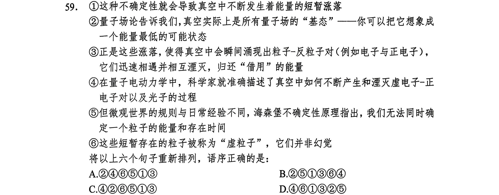
答案点击查看答案与解析
有量子场的“基态”，是能量最低的可能状态，④句指出科学家可以准确描述真空中如何
不断产生和湮灭虚电子-正电子对等的过程，根据逻辑顺序，应先引出“真空”这一概念，
再具体介绍其内部产生、湮灭电子等的相关情况，故相比之下④句不适合作首句，排除
C.D两项。
继续观察发现，⑥句中出现指代词“这些”，根据指代词后文内容可知，前文应提及
“短暂存在的粒子”，⑥句前为③、④句，对比可知，③句指出涨落使得真空中瞬间涌
现出粒子-反粒子对，它们迅速相遇并相互湮灭，与⑥句可以构成指代关系，B项当选，
④句指出科学家可以准确描述真空中如何不断产生和湮灭虚电子等的过程，并未提及
“短暂存在的粒子”，故无法与⑥句构成指代关系，排除A项。
故正确答案为B。
【文段出处】科普中国《都说宇宙起源于宇宙大爆炸，但为什么“真空”中能凭空冒
出各种粒子？》
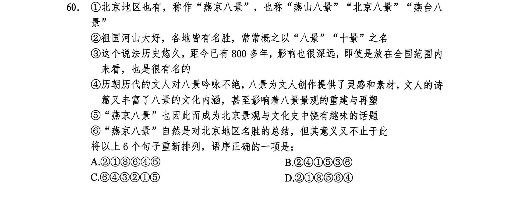
答案点击查看答案与解析
景”之名，⑥句对北京地区的“燕京八景”进行分析，按照行文逻辑，应该先介绍祖国各地
的名胜常有“八景”“十景”之名，再具体介绍“燕京八景”，故②句在⑥句之前，排除C项。
继续观察选项，对比尾句。④句指出“八景”与文人之间的关系，⑤句通过“因此”对
“燕京八景”进行总结，说明“燕京八景”具备景观与文化的双重属性，⑥句指出“燕京八景”
是对北京景观的总结，又引出意义不止于此，按照行文逻辑，应该先介绍“燕京八景”与
景观相关，再进一步分析其文化方面的意义，最后对景观与文化进行分析总结，故三句
顺序应为⑥④⑤，A项当选。
故正确答案为A。
生活在网络环境中，没有所谓的“空闲时间”，通勤时刷短视频、吃饭时看直播，甚至洗澡时也要戴着耳机听播客。人们即使在休憩或旅行中，也难以找到独处的状态：度假时，朋友圈定位与九宫格照片发布的优先级高于欣赏日出日落；户外运动时，隔十分钟就想看看手机，生怕错过“重要”信息。安静让他们变得烦躁不安，仿佛独处意味着被世界抛弃，必须用持续的信息输入填满每分钟。这种对“空闲”的恐惧，本质上是对自我的陌生——当剥离了网络标签和社交互动，我们是否还能认识那个独处的自己？
文中“对‘空闲’的恐惧”指的是：
A.担心错过网络世界的重要信息
B.害怕在独处中暴露真实自我
C.无法适应没有即时反馈的生活
D.因网络社交中断而迷失自我
答案点击查看答案与解析
质上是”进行解释说明，说明了恐惧来源于对自我的陌生，人们可能不认识剥离了网络标
签和社交互动后的自己。故文段“对‘空闲’的恐惧”是指人们对脱离网络后的自己感到陌生，
对应D项。
A项，“担心错过网络世界的重要信息”是人们为自己没有空闲时间找的借口，并非
“对‘空闲’的恐惧”的本质含义，排除；
B项，“暴露真实自我”无中生有，且文段强调恐惧与网络有关，未提及网络，排除；
C项，文段强调恐惧来源于“不认识脱离网络后的自我”，未提及网络与自我，排除。
故正确答案为D。
十几年前，一项针对2000名英国成年人的调查首次提出可能有“爱好基因”的存在。只要看看他们的家谱和他们祖先的喜好，就会发现他们强烈倾向于某些类型的活动。科学家甚至发现了一种特殊的基因变体，这种变体决定了填字游戏是否会吸引你。当然，这与你是否擅长无关。不少科技企业花费了大量时间寻找所谓的“人才基因”，即可能赋予一个人天生独特能力的基因变体，使一个人能够被引导到他最能发挥价值的领域。但到目前为止，似乎对于所有的天赋，无论是数字运算、音乐能力还是运动能力，基因只会产生很小的影响。
下列说法与这段文字意思相符的是：
A.基因在潜意识中支配着我们的行为
B.我们的行为很大程度上源于自身意志
C.未来也许能找到赋予某种天赋的人才基因
D.基因可能影响着我们进行某些活动的自然倾向
答案点击查看答案与解析
似乎对于所有的天赋，无论是数字运算、音乐能力还是运动能力，基因只会产生很小的
影响”可知，“支配”一词表述过于绝对，排除；
B项，文段仅介绍基因对于人们活动会产生影响，并未涉及“自身意志”对人们行为
的影响，无中生有，排除；
C项，文段并未提到未来能否找到赋予某种天赋的人才基因，无中生有，排除；
D项，根据“只要看看他们的家谱和他们祖先的喜好，就会发现他们强烈倾向于某些
类型的活动”以及“似乎对于所有的天赋，无论是数字运算、音乐能力还是运动能力，基
因只会产生很小的影响”可知，基因确实有可能影响我们的某些活动，符合文意，当选。
故正确答案为D。
西夏文字参照汉字形体创制，特点主要有：根据汉字部首偏旁创制，借鉴汉字的横、竖、撇、捺、钩、折笔画，唯独放弃单个“挑”画不用，常把撇和点连写，类似汉字“两点水”的行书写法；一字一音，字形方正，与契丹、女真字相仿，类似“八分字”，共有6000多字；文字笔画重复、雷同的较多，笔画多在8至20画之间；西夏文字斜画较多，撇、捺等斜画比汉字丰富，有较多的会意字、音义合成字。总体而言，西夏文字的笔画非常均匀规范，严谨而美观。
关于西夏文字，文中没有提及：
A.创制时间 B.字形特点 C.文字数量 D.造字依据
答案点击查看答案与解析
选；
B项，根据“一字一音，字形方正，与契丹、女真字相仿，类似‘八分字’”可知，西夏
文字的“字形特点”文段有所提及，排除；
C项，根据“共有6000多字”可知，西夏文字的“文字数量”文段有所提及，排除；
D项，根据“西夏文字参照汉字形体创制”及“根据汉字部首偏旁创制，借鉴汉字的
横······”可知，西夏文字的“造字依据”文段有所提及，排除。
本题为选非题，故正确答案为A。
传统“正史”中，《史记》和《汉书》双峰并峙，影响深远，而两者间的异同高下之比较，也成了中国史学史上最有兴味的话题之一。有的时代人们喜欢《史记》，有时则更喜欢《汉书》，概略地说，大约中唐之前，人们甲班乙马，宋以后，人们劣固优迁。汉唐间，《汉书》对《史记》占有压倒性优势，因为《史记》被当作诽谤愤怨之书。中唐之后，文风递变，《史记》开始受到青睐，宋人如郑樵和刘辰翁都贬低《汉书》。到明代，文学领域的拟古派、唐宋派都对《史记》推崇备至。清代随着考据学兴起，《汉书》地位相对升高而《史记》稍逊，但也算不上扳回一局。
这段文字没有提到下列哪一现象的原因？
A.中唐之前甲班乙马
B.宋代之后劣固优迁
C.《汉书》在清代地位有所提升
D.《史记》被认为具有“诽谤”之意
答案点击查看答案与解析
扬班固及其《汉书》而抑司马迁及其《史记》。根据“汉唐间，《汉书》对《史记》占有
压倒性优势，因为《史记》被当作诽谤愤怨之书。”可知，“中唐之前甲班乙马”的原因文
段有提及，排除；
B项，“劣固优迁”意为贬低班固及其《汉书》而推崇司马迁及其《史记》。根据“中
唐之后，文风递变，《史记》开始受到青睐，宋人如郑樵和刘辰翁都贬低《汉书》”可知，
“宋代之后劣固优迁”的原因文段有提及，排除；
C项，根据“清代随着考据学兴起，《汉书》地位相对升高”可知，“《汉书》在清代
地位有所提升”的原因文段有提及，排除；
D项，文段仅提到“《史记》被当作诽谤愤怨之书”，但未解释其原因，当选。
本题为选非题，故正确答案为D。
量子信息分三大块：量子计算机、量子通信、量子精密测量，其共同特点是利用量子态进行信息处理、测量或者传输，但操控量子态需要非常高精尖的严苛环境，目前主要应用于专业领域，并没有任何在医疗健康领域的应用，更不可能用一个手环去操控量子态，所谓的“用量子能量、标量波引起DNA、线粒体共振，给身体带来能量”，仅仅是把公众接触较少的词汇堆砌在一起，是彻底的伪科学骗局。而一些人之所以会觉得它们有效，主要是因为心理暗示。
这段文字意在：
A.驳斥量子手环具有治病、提供能量的功能
B.强调量子信息在特定领域的应用是伪科学
C.证明量子手环在治疗中起到了安慰剂作用
D.介绍量子信息在医疗健康方面的相关应用
答案点击查看答案与解析
具备的共同特点，即都需要利用量子态，随后通过“但”进行转折，指出操控量子态需要
非常高精尖的严苛环境，因此量子信息目前主要应用于专业领域，没有任何在医疗健康
领域的应用，进而得出结论，即量子手环是彻底的伪科学骗局，尾句进行补充论证，故
整个文段重点强调量子手环是伪科学骗局，对应A项。
B项，缺少文段核心话题“量子手环”，排除；
C项，对应尾句非重点部分，排除；
D项，缺少文段核心话题“量子手环”，且文段重点强调量子信息没有在医疗健康领
域的应用，所谓的量子手环是伪科学骗局，排除。
故正确答案为A。
三个自然数成等差数列，公差为20，其和为4095。这三个数中最大的是：
A.1345 B.1365 C.1385 D.1405
答案点击查看答案与解析
到大依次为a、b、c，则b为该等差数列的中项。三个自然数之和为4095，则根据等差
数列中项求和公式可知，b=4095÷3=1365。则c=1365+20=1385。
某超市在春节前购进一批食品礼盒，加价20%后全部售出，用收入的一半又购进一批，加价25%后全部售出又盈利3000元，则第一次购进的食品礼盒全部售出后盈利多少元？
A.3000 B.4000 C.5000 D.6000
答案点击查看答案与解析
元。根据题意可知，第二批食品礼盒的盈利即第一批收入一半的25%，则有
1.2x÷2×25%=3000，解得x=20000。则第一批食品礼盒的盈利为20000×20%=4000元。
方法二，由题意可知，第二批食品礼盒的利润率为25%，利润为3000元，则第一
批食品礼盒收入的一半为3000÷25%=12000元，购进第一批食品礼盒的成本为12000×2÷
（1+20%）=20000元，则第一次购进的食品礼盒全部卖出后盈利20000×20%=4000元。
有一瓶浓度为15%的盐水500克，每次加入34克浓度为60%的盐水，则至少加多少次该盐水，才能使这瓶盐水的浓度超过30%？
A.6 B.7 C.8 D.9
答案点击查看答案与解析
则有
15%5
5
0
0
0
0
+
+
6
3
0
4
%
x
34x
>30%，解得x>7.35。因所求为整数，故至少需加8次该盐
水。故本题选C。
方法二，设至少加入浓度为60%的盐水x克，由十字交叉法可得：
15%30%500
30%
60%15%x
30%500
则有=，解得x=250。250÷34=7……12，故至少需加7+1=8次该盐水。
15%x
某场学术论坛有6家企业作报告，其中A企业和B企业要求在相邻的时间内作报告，C企业作报告的时间必须在D企业之后、在E企业之前，F企业要求不能第一个，也不能最后一个作报告。如满足所有企业的要求，则报告的先后次序共有多少种不同的安排方式？
A.12 B.24 C.72 D.144
答案点击查看答案与解析
邻，则将A、B捆绑后插入到D、C、E形成的4个空中有C14=4种方式；A、B内部顺
序可以互换，有A2=2种方式；F不能在第一个，也不能在最后一个，所以F只能安排
2
在AB、D、C、E形成的三个空中，有C13=3种方式。则报告的先后次序共有4×2×3=24
种不同的安排方式。
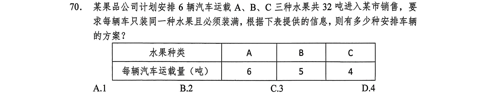
答案点击查看答案与解析
x+y+z=6①
y、z均为正整数），根据题意有，①×6-②可得y+2z=4，2z和4
6x+5y+4z=32②
均为偶数，则y肯定也为偶数，则y=2，解得z=1，x=3。故只有一种安排车辆的方案。
1
小王和小李从甲地去往相距15（千米）的乙地调研。两人同时出发且速度相同。15（分钟）后，小王发现遗漏了重要文件遂立即原路原速返回，小李则继续前行；小王取到文件后提速20%追赶小李，在小李到达乙地时刚好追上，假设小王取文件的时间忽略不计，则小李的速度为多少（千米/时）？
A.3 B.4.5 C.5 D.6
答案点击查看答案与解析
4
km/h，则小王取到文件后追赶小李的速度为1.2vkm/h，设从小王返回时起小李用了t小
时到达乙地，结合题意，将每段路程如下图标注，根据线段间的关系可得
1
4
v+vt=1.2v×
（t-
1
4
）=15，由左边等式解得t=
1
4
1
，代入右边等式解得v=5，故小李的速度为5km/h。
某班在筹备联欢会时发现很多同学都会唱歌和乐器演奏，但有部分同学这2种才艺都不会。具体有4种情况：只会唱歌，只会乐器演奏，唱歌和乐器演奏都会，唱歌和乐器演奏都不会。现已知会唱歌的有22人，会乐器演奏的有15人，两种都会的人数是两种都不会的5倍。这个班至多有多少人？
A.27 B.30 C.33 D.36
答案点击查看答案与解析
斥原理得，这个班的总人数为22+15-5x+x=37-4x。要使这个班的人数最多，x应最小，
最小可取1，此时这个班的总人数最多为37-4=33人。
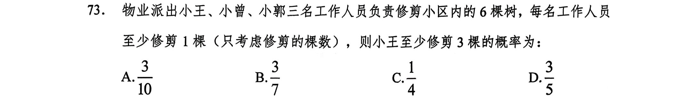
答案点击查看答案与解析
考虑修剪的棵数）。可采用隔板法，在6棵树所形成的5个空中插入2个挡板，则总的
等可能样本数为C2=10。小王至少修剪3棵树，至多修剪6-1-1=4棵树，则三人修剪棵
5
数的情况如下：
小王小曾小郭
321
312
411
该事件包含的等可能样本数为3，则所求概率为
1
3
0
甲乙
。故本题选A。
某小学举行作文大赛，家长们对挑选出来的6篇作文进行不记名投票。每张选票可以选择6篇作文中的任意一篇或多篇，但只有选择不超过3篇作文的票才是有效票。6篇作文的得票数（不考虑是否有效）分别为总票数的67%、53%、72%、39%、51%、48%，那么本次投票的有效率最少为：
A.21% B.22% C.23% D.24%
答案点击查看答案与解析
篇作文的总得票数为67+53+72+39+51+48=330票，要想投票的有效率最少，则有效票要
最少，无效票要最多。假设所有人都投无效票，且要保证有效票少，那么投无效票的都
投4票，需用400票，400>330，说明其中一定有有效票，最少有400-330=70票产生有
效票，要想有效票少，投有效票的每人投1票，70÷（4-1）≈23.3，故本次投票的有效率
最少为24%。
方法二，假设共有100位家长，每位家长有一张选票，则6篇作文的总得票数为
67+53+72+39+51+48=330票，设有效票x张，无效票y张，根据题目要求有x+y=100①，
（1、2、3）x+（4、5、6）y=330②，由“小系数、同方向”可知，优先看x的系数，
要使投票的有效率尽可能少，则x尽量小，x的系数最小取1，y的系数也取最小的4，
1
则②可变为x+4y=330③，①×4-③得x=23，求x的最小值，故x取24，故本次投票的
3
有效率最少为24%。
1
4
v
vt
1.2v（t-
1
4
15
李
丙
王
）
1
4
v
军事演习的模拟战场上有三个要点，B点在A点正北方3千米处，C点在A点正东方4千米处。现某部队保持与B、C两点相同的距离穿行战场，其在行进过程中，与A点之间最短的距离为多少千米？
A.0.5 B.0.6 C.0.7 D.0.875
答案点击查看答案与解析
32+42=5千米，保持与B、
C两点的距离相同，则应沿BC的垂直平分线行进。其中O为BC中点，m为BC的垂
直平分线，AD垂直BC于D，则m∥AD，则OD的长度就是部队行进过程中，与A点
最短的距离。
三角形ABD与三角形CBA相似，则BD=BA×
A
B
B
C
=3×
3
5
=1.8千米，OD=
5
2
-1.8=0.7
千米，故本题选C。
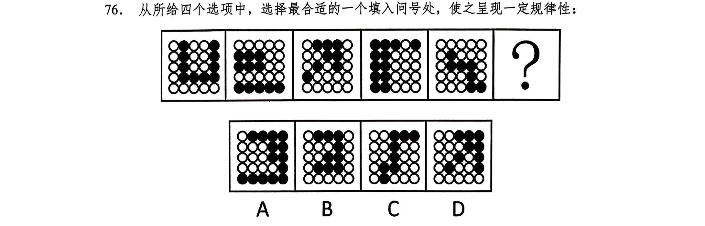
答案点击查看答案与解析
较规整，优先考虑对称性。图1黑色区域为轴对称图形，图2白色区域为轴对称图形，
图3黑色区域为轴对称图形，图4白色区域为轴对称图形，图5黑色区域为轴对称图形，
因此“？”处应该是白色区域为轴对称图形，只有A项符合。故正确答案为A。
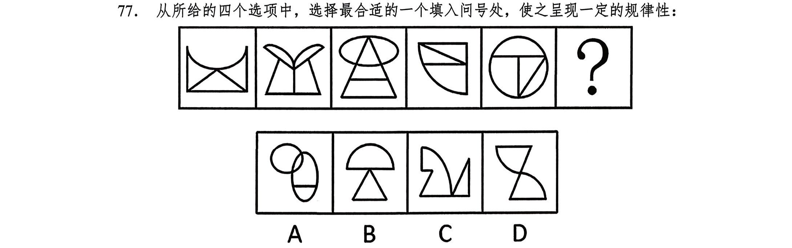
答案点击查看答案与解析
现，题干图形均由直线和曲线构成，且直线和曲线出现明显相交，考虑曲直交点数。题
干图形的曲直交点数均为3，故“？”处应选择有3个曲直交点的图形，只有D项符合。
故正确答案为D。
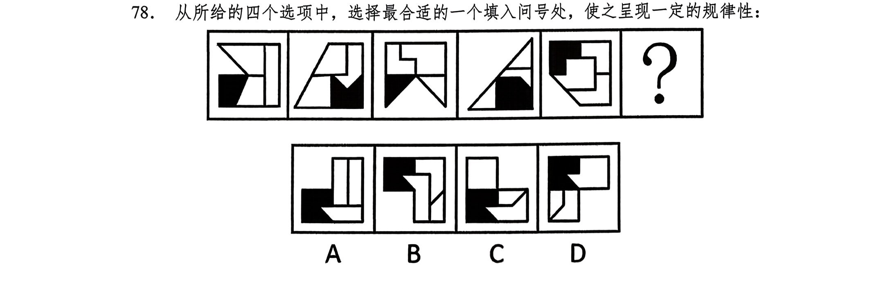
答案点击查看答案与解析
现，题干图形均由一个黑色面和三个白色面组成，优先考虑数面，但整体数面无唯一答
案。继续观察发现，前一幅图形中的黑色面形状旋转180°之后，与后一幅图的外框形
状相同，满足这一规律的只有A项。故正确答案为A。
另一规律，每个图形中都有大小形状相同的区域，从第1图到第5图，依次为：阴
影空白相同，两空白相同，阴影空白相同，两空白相同，阴影空白相同，第6图应该为
两空白相同。故答案为A。
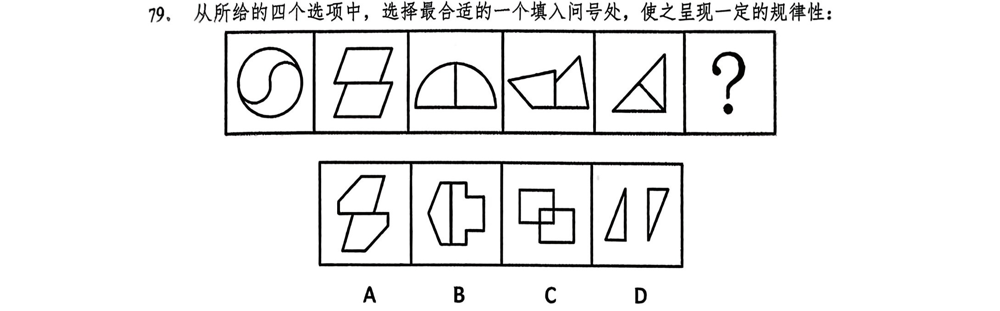
答案点击查看答案与解析
间关系。观察发现，题干两个面均是以边相连，排除C.D两项；继续观察发现，每幅图
均为形状、大小相同的两个图形，排除B项。故正确答案为A。
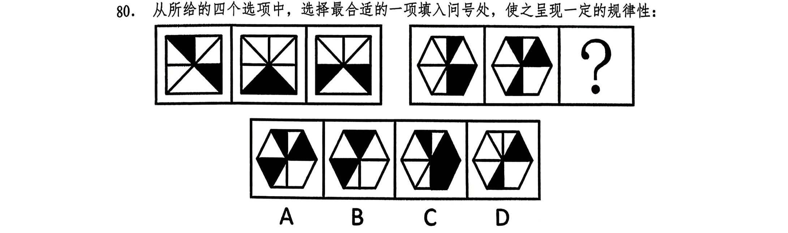
答案点击查看答案与解析
由黑块和白块组成，且色块分布均匀，优先考虑黑白块面积。第一组图形中，黑块面积
均为整个图形面积的，第二组图形中，前两幅图形的黑块面积均为整个图形面积的，
故？处图形的黑块面积应为整个图形面积的，只有B项符合。故正确答案为B。
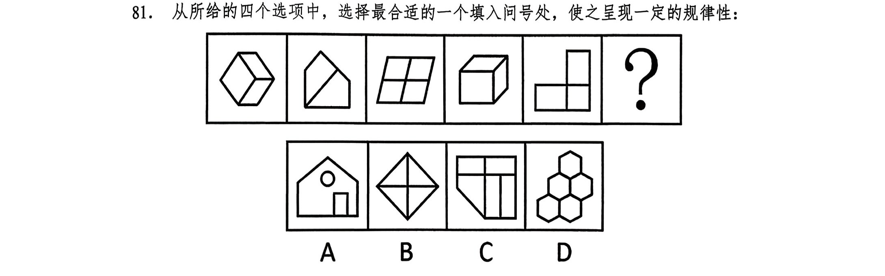
答案点击查看答案与解析
现，题干图形封闭区域明显，考虑面数量，但总体数面无明显规律。继续观察发现，题
干所有面的形状均为四边形，故？处图形中所有面的形状也应均为四边形，只有C项符
合。故正确答案为C。
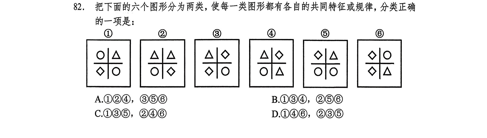
答案点击查看答案与解析
考虑数量规律。观察发现，每幅图均有4个元素，且均存在2个相同元素，图①③④中
相同元素位置相对，图②⑤⑥中相同元素位置相邻。即图①③④为一组，图②⑤⑥为一
组。故正确答案为B。
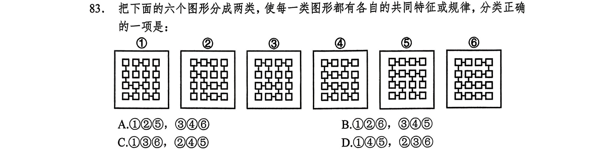
答案点击查看答案与解析
现，题干中每幅图形都只有两个小方块连接三条短线，且图①③⑥中两个小方块直接
相连，图②④⑤中两个小方块中间隔着一个小方块，如下图所示，故图①③⑥为一组，
图②④⑤为一组，故正确答案为C。
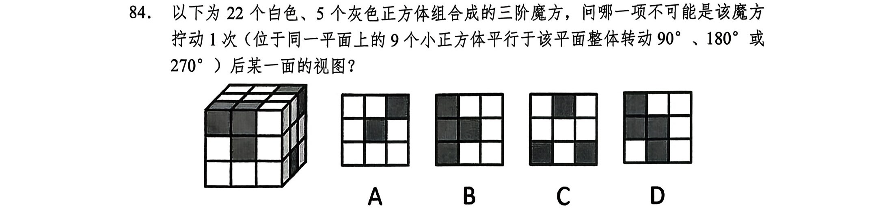
答案点击查看答案与解析
A项：将该魔方最上面一层整体水平逆时针旋转90°，其正视图为A项，排除；
B项：将该魔方最右侧一层整体竖直逆时针旋转90°，其正视图旋转后可得B项，
排除；
C项：将该魔方最左侧一层整体竖直顺时针旋转90°后，其俯视图旋转后可得C项，
排除；
D项：该魔方拧动1次后无法得到该视图，当选。本题为选非题，故正确答案为D。
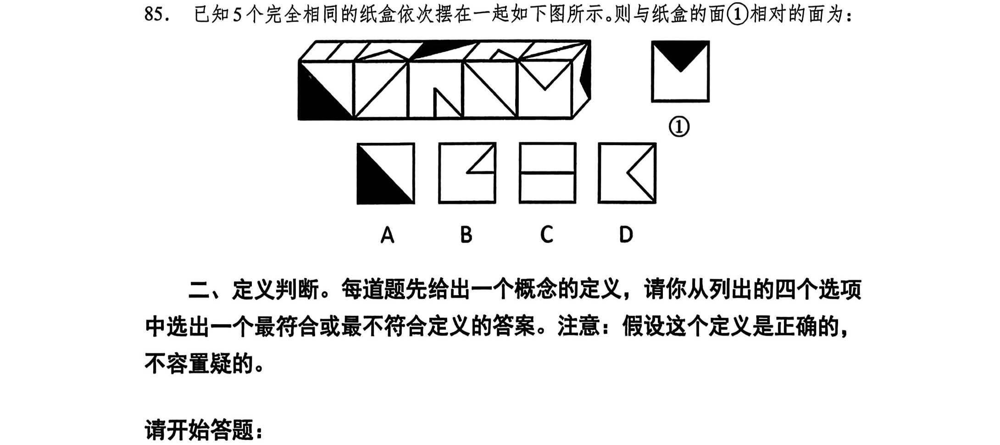
答案点击查看答案与解析
全不同的面，说明立方体每个面都不相同。需要依据题干立体图的相同面推导相邻面的
情况。把相同面进行标号，再依次推导，如下图所示：
先按照①面的位置，找到②面。再根据②面的相对位置找到③面，再根据③面推
导④面，此时注意③面相对位置，别弄错，能准确确定④面。此时，正方体的四个侧
面全部找全，上顶面和下底面也就能判定出来。因此，三角形阴影面的相对面是小三角。
故答案为B。
表层扮演是情绪劳动的一种策略，指个体隐藏真实情绪，按照工作要求伪装出特定外在情绪表现的行为模式；深层扮演指个体通过调整内在真实情感以符合工作要求的情绪表达方式，它强调内在情绪体验与外在表现的一致性。
根据上述定义，下列体现深层扮演的是：
A.服务员面对顾客投诉强忍怒火保持职业微笑
B.护士换位思考理解患者焦虑后主动安抚情绪
C.客服人员机械背诵标准化礼貌用语应对咨询
D.销售员因业绩压力自发对产品产生强烈信心
答案点击查看答案与解析
作要求伪装出特定外在情绪表现”；深层扮演：“个体通过调整内在真实情感以符合工作
要求的情绪表达方式”、“强调内在情绪体验与外在表现的一致性”。
A项：服务员面对顾客投诉强忍怒火保持职业微笑，符合“个体隐藏真实情绪”、“按
照工作要求伪装出特定外在情绪表现”，符合“表层扮演”定义，不符合“深层扮演”定义，
排除；
B项：护士换位思考理解患者焦虑后主动安抚情绪，护士能够换位思考并主动安抚，
说明其从内心理解了患者的情绪并且体现在了外在表现上，符合“个体通过调整内在真实
情感以符合工作要求的情绪表达方式”、“强调内在情绪体验与外在表现的一致性”，符合
“深层扮演”定义，当选；
C项：客服人员机械背诵标准化礼貌用语应对咨询，未体现其内在情绪，不符合“个
体通过调整内在真实情感以符合工作要求的情绪表达方式”、“强调内在情绪体验与外在
表现的一致性”，不符合“深层扮演”定义，排除；
D项：销售员因业绩压力自发对产品产生强烈信心，未体现其情绪的外在表现，不
符合“个体通过调整内在真实情感以符合工作要求的情绪表达方式”、“强调内在情绪体验
与外在表现的一致性”，不符合“深层扮演”定义，排除。
故正确答案为B。
光杆动词式把字句，是指“把＋名词＋光杆动词”，即动词后无任何附加成分的句子；动趋式把字句，是指“把＋名词＋动趋式动补短语”的句子，其中动趋式动补短语表达了行为发生的趋势。
根据上述定义，下列属于动趋式把字句的是：
A.你别把家门上锁
B.母亲把剩菜带回来
C.你别把小问题复杂化
D.我建议大会把这个提案取消
答案点击查看答案与解析
“动词后无任何附加成分”；动趋式把字句：“把+名词+动趋式动补短语（表达了行为发生
的趋势）”。
A项：“你别把家门上锁”的结构是“把+家门+上锁”，“上锁”并非行为趋势，不符合“把
+名词+动趋式动补短语（表达了行为发生的趋势）”，不符合“动趋式把字句”定义，排除；
B项：“母亲把剩菜带回来”的结构是“把+剩菜+带回来”，“带回来”表达了行为发生
的趋势，符合“把+名词+动趋式动补短语（表达了行为发生的趋势）”，符合“动趋式把字
句”定义，当选；
C项：“你别把小问题复杂化”的结构是“把+小问题+复杂化”，“复杂化”并非行为趋
势，不符合“把+名词+动趋式动补短语（表达了行为发生的趋势）”，不符合“动趋式把字
句”定义，排除；
D项：“我建议大会把这个提案取消”的结构是“把+提案+取消”，“取消”为动词，其
后无附加成分，符合“把+名词+光杆动词”、“动词后无任何附加成分”，符合“光杆动词式
把字句”定义，不符合“动趋式把字句”定义，排除。
故正确答案为B。
转口贸易是指商品生产国与消费国通过第三国（或地区）转手进行的贸易活动，生产国和消费国不直接进行买卖，货物在第三国不经过加工或仅进行简单分类、包装等非本质改变。
根据上述定义，下列属于转口贸易的是：
A.迪拜将伊朗原油提炼成成品油后销往欧洲
B.新加坡从中国进口手机零部件，组装后出口至印度
C.智利铜矿经某港口卸货后，直接原箱装船运往日本
D.中国纺织品出口至荷兰，荷兰贸易商更换原产地证明文件后转卖至英国
答案点击查看答案与解析
地区）转手进行的贸易”、“在第三国不经过加工或仅进行简单分类、包装等非本质改变”。
A项：该项中的伊朗为“生产国”，欧洲为“消费国”，迪拜为“第三国（或地区）”，
但是迪拜将伊朗原油提炼成成品油，说明第三国（或地区）对商品进行了加工，不符合“在
第三国不经过加工或仅进行简单分类、包装等非本质改变”，不符合定义，排除；
B项：该项中的中国为“生产国”，印度为“消费国”，新加坡为“第三国（或地区）”，
但新加坡将手机零部件组装后进行出口，说明第三国对商品进行了加工，不符合“在第三
国不经过加工或进行简单分类、包装等非本质改变”，不符合定义，排除；
C项：该项中的智利为“生产国”，日本为“消费国”，秘鲁为“第三国（或地区）”，
智利铜矿经过秘鲁港口卸货后，直接原箱装船运往日本，即只是在秘鲁进行停靠转运，
未体现在此进行贸易，不符合“通过第三国（或地区）转手进行的贸易”，不符合定义，
排除；
D项：该项中的中国为“生产国”，英国为“消费国”，荷兰为“第三国（或地区）”，
荷兰贸易商“更换”原产地证明文件后“转卖”至英国，符合“通过第三国”（或地区）转手
进行的贸易”、“在第三国不经过加工或仅进行简单分类、包装等非本质改变”，符合定义，
当选。故正确答案为D。
随机变量X1和X2独立，是指X1的取值不影响X2的取值，X2的取值也不影响X1的取值；随机变量X1和X2服从同一分布，是指X1和X2在取值范围内的概率分布一致。如果一些随机变量服从同一分布，并且互相独立，那么这些随机变量是独立同分布。
根据上述定义，下列随机变量是独立同分布的是：
A.甲、乙两人先后抽奖，甲、乙抽中奖的情况
B.甲、乙两人先后掷骰子，甲、乙掷出点数的情况
C.实力差距悬殊的甲、乙两棋手进行比赛，甲、乙的胜负情况
D.在街上随机选择一名男性甲和一名女性乙，甲、乙的身高情况
答案点击查看答案与解析
的取值也不影响X1的取值”；同一分布：“X1和X2在取值范围内的概率分布一致”；独
立同分布：“服从同一分布”且“互相独立”。
A项：甲、乙两人“先后”抽奖，因此甲抽中的结果会影响乙抽中的概率，不符合“X1
和X2在取值范围内的概率分布一致”，不符合“服从同一分布”，不符合“独立同分布”定
义，排除；
B项：甲、乙两人先后掷骰子，骰子的点数取值范围均为1-6，且每个点数出现的概
率均为，符合“X1和X2在取值范围内的概率分布一致”，同时甲掷出的点数不会对乙
掷出的点数产生任何影响，符合“互相独立”，符合“独立同分布”定义，当选；
C项：甲、乙两棋手实力差距悬殊，甲获胜的概率远高于乙，二者的胜负概率分布
不一致，不符合“X1和X2在取值范围内的概率分布一致”，不符合“服从同一分布”，不
符合“独立同分布”定义，排除；
D项：随机选择的男性甲和女性乙，二者的身高概率分布存在明显差异，不符合“X1
和X2在取值范围内的概率分布一致”，不符合“服从同一分布”，不符合“独立同分布”定
义，排除。
故正确答案为B。
求同求异并用法是探求现象间因果联系的一种方法，是指在被研究现象出现的若干正面场合中，都有一个相同的先行情况出现，而在被研究现象不出现的若干反面场合中，该先行情况都不出现，则该先行情况就是被研究现象的原因。
根据上述定义，下列体现求同求异并用法的是：
A.世界杯期间，小明第一晚边看边喝浓茶，失眠了；第二晚边看边喝咖啡，失眠了；第三晚边看边抽烟，失眠了。可见吸烟、喝咖啡和喝浓茶是失眠的原因
B.体质相同的双胞胎兄弟在饭店用餐，一个吃了冰激凌后出现腹痛；另一个没吃冰激凌未出现腹痛，两人吃的其他食物完全相同。可见吃冰激凌是腹痛的原因
C.电脑维修店接待了几位因电脑中毒前来维修的顾客，他们的电脑品牌、型号各有不同，但他们的电脑在中毒前都运行了同一个软件。可见该软件可能存在木马程序
D.失足青年的家庭一般都不稳定，有的父母离异，有的父母对孩子关心帮助不够；而没有失足的青年家庭较为稳定，父母经常关心和帮助他们。可见家庭不稳定是青年失足的重要原因
答案点击查看答案与解析
有一个相同的先行情况出现”、“在被研究现象不出现的若干反面场合中，该先行情况都
不出现”、“该先行情况就是被研究现象的原因”。
A项：小明第一晚边看边喝浓茶，第二晚边看边喝咖啡，第三晚边看边吸烟，三晚
做的事不相同，不是同一个先行情况，不符合“在被研究现象出现的若干正面场合中，都
有一个相同的先行情况出现”，不符合定义，排除；
B项：双胞胎兄弟在饭店用餐，一个吃了冰激凌，另一个没吃冰激凌，只有兄弟两
个人，不符合“在被研究现象出现的若干正面场合中，都有一个相同的先行情况出现”、“在
被研究现象不出现的若干反面场合中，该先行情况都不出现”，不符合定义，排除；
C项：几位顾客电脑在中毒前都运行了同一个软件，未提及“在被研究现象不出现的
若干反面场合中，该先行情况都不出现”，不符合定义，排除；
D项：失足青年的家庭一般都不稳定，符合“在被研究现象出现的若干正面场合中，
都有一个相同的先行情况出现”，没有失足的青年家庭较为稳定，符合“在被研究现象不
出现的若干反面场合中，该先行情况都不出现”，可见家庭不稳定是青年失足的重要原因，
符合“该先行情况就是被研究现象的原因”，符合定义，当选。
故正确答案为D。
具身智能是指智能体（如机器人、无人机、智能汽车等）通过物理实体与环境实时交互，不断修正自身模型和策略，在不断变化的环境中做出实时反应，实现感知、认知、决策和行动一体化。
根据上述定义，下列场景中没有体现具身智能的是：
A.无人机按计划路线对稻田进行农药喷洒，实现“科技助农”
B.作战机器人实时分析环境数据，在复杂地形中自主行走和避障
C.自动驾驶汽车在绿灯变红前3秒钟，做出“加速驶过路口”的决策
D.人形机器人“消防员”正在灭火，突然看到被困群众，立马上前安抚他们
答案点击查看答案与解析
断修正自身模型和策略”、“在不断变化的环境中做出实时反应”、“实现感知、认知、决
策和行动一体化”。
A项：无人机符合“智能体”，按计划路线对稻田进行农药喷洒，不符合“在不断变化
的环境中做出实时反应”，不符合定义，当选；
B项：作战机器人符合“智能体”，实时分析环境数据，符合“物理实体与环境实时交
互”，在复杂地形中自主行走和避障，符合“在不断变化的环境中做出实时反应”，符合定
义，排除；
C项：自动驾驶汽车符合“智能体”，在绿灯变红前3秒钟，做出“加速驶过路口”的
决策，符合“在不断变化的环境中做出实时反应”，符合定义，排除；
D项：人形机器人符合“智能体”，突然看到被困群众，立马上前安抚他们，符合“在
不断变化的环境中做出实时反应”，符合定义，排除。
本题为选非题，故正确答案为A。
片面谬误是指用特例为自己的错误开脱。人们都不喜欢被证明自己的言行是错误的，所以当他们被证明是错误的时侯，总会想办法给自己找理由。
根据上述定义，下列属于片面谬误的是：
A.领导指出小王工作出了差错，小王说那天自己身体刚好不舒服
B.小赵年终考核垫底，他自我安慰道，不管怎么考核，总有人是最差的
C.老师批评小孙考试经常出现计算错误，小孙妈妈说孩子一着急就这样
D.小李超常发挥获得比赛二等奖，他心里想，再多答对一题就能得一等奖了
答案点击查看答案与解析
A项：小王以那天自己身体不舒服为借口，为工作出差错开脱，符合“用特例”、“为
自己的错误开脱”，符合定义，当选；
B项：小赵用总有人是最差的来安慰年终考核垫底的自己，不是特例，不符合“用特
例”，不符合定义，排除；
C项：小孙妈妈用孩子着急来解释小孙考试经常出现计算错误，不符合“为自己的错
误开脱”，不符合定义，排除；
D项：小李比赛获得二等奖，心里想再多答对一题就能获得一等奖，不符合“用特例”、
“为自己的错误开脱”，不符合定义，排除。
故正确答案为A。
医疗伦理损害是指医疗机构及医务人员从事各种医疗行为时，未对患者充分告知或者说明其病情，未对患者提供及时有用的医疗建议，未保守与病情有关的各种秘密，或未取得患者同意即采取某种医疗措施或停止继续治疗等，而违反医疗职业良知或职业伦理上应遵守的规则的过失行为。
根据上述定义，下列涉及了医疗伦理损害的是：
A.患者在治疗期间发现医院对其病历进行了篡改和伪造，导致其在后续治疗中受到误导
B.患者因咳嗽住院，医生对其使用了昂贵且非必要的抗生素，并延长其住院时间，患者感到疑惑，但医生未给予充分解释
C.患者因外伤处于不可逆的昏迷状态，医生在告知家属情况后，家属选择撤除呼吸机，停止进一步的生命支持
D.患者因身体不适前往一家无证诊所就诊，在接受治疗后，患者病情加重并出现并发症
答案点击查看答案与解析
知或者说明其病情，未提供及时有用的医疗建议······等”、“违反医疗职业良知或职业伦
理”。
A项：患者被篡改和伪造的是其治疗期间的病历，医生对患者的具体病情、医疗建
议是否充分告知，是否保守秘密等问题并未涉及，不符合“未对病患充分告知或者说明其
病情，未提供及时有用的医疗建议······等”，不符合定义，排除；
B项：医生在患者感到疑惑时并未充分解释，符合“未对病患充分告知或者说明其病
情”，使用昂贵且非必要的抗生素并延长住院时间，符合“违反医疗职业良知或职业伦理”，
符合定义，当选；
C项：医生在告知家属情况后，家属选择撤离呼吸机，医生并不存在过失行为，不
符合“违反医疗职业良知或职业伦理”，不符合定义，排除；
D项：患者在接受治疗后病情加重并出现并发症，不符合“未对病患充分告知或者说
明其病情，未提供及时有用的医疗建议······等”，不符合定义，排除。
故正确答案为B。
民航运输生产指标中，民航客座率指的是实际承运人数与可供座位数的百分比。民航载运率包括航站始发载运率和航线载运率两个指标，其中航站始发载运率是实际载运量与飞机最大载运能力之比；航线载运率是实际总周转量与最大周转量之比。飞行小时生产率指的是每一运输飞行小时平均完成的吨公里数，以“吨公里/时”为计量单位。其计算采用两种等效公式：基于运输总周转量与飞行时间的比值（运输总周转量/运输飞行小时），或每班最大业载与航速的乘积（每班最大业载×航速）。
根据上述定义，下列说法错误的是：
A.航线载运率可反映飞机在一条航线上载运能力的利用程度，也反映客货源的变动情况
B.每班最大业载越高，航速越快，运输总周转量就越高，运输飞行小时也越多
C.客座率可以反映航班座位资源的使用效率，该指标会受到市场需求、票价策略的影响
D.航站始发载运率反映了航站对飞机载运能力的利用程度和航班组织的合理性，是调整航班、编制发送量的依据
答案点击查看答案与解析
的百分比”；航站始发载运率：“实际载运量与飞机最大载运能力之比”；航线载运率：“实
际总周转量与最大周转量之比”；飞行小时生产率：“每一运输飞行小时平均完成的吨公
里数”、“运输总周转量/运输飞行小时”、“每班最大业载×航速”。
A项：航线载运率的定义为“实际总周转量与最大周转量之比”，周转量是指一定时
期内，实际运送的旅客人数或货物吨量与其运输距离的乘积。实际总周转量与最大周转
量之比直接反映飞机在航线上的载运能力利用程度，而实际总周转量受客货源影响（客
货源充足则实际总周转量高），因此也能反映客货源变动情况，说法正确，排除；
B项：根据飞行小时生产率的两种等效公式“运输总周转量／运输飞行小时”、“每班
最大业载×航速”可以得出：“运输总周转量／运输飞行小时=每班最大业载×航速”，可推
导得出“运输总周转量=每班最大业载×航速×运输飞行小时”。当每班最大业载越高，航
速越快时，但运输飞行小时未知，则运输总周转量不一定越高；同理，运输总周转量未
知，则运输飞行小时也不一定越多，说法错误，当选；
C项：根据民航客座率的定义“实际承运人数与可供座位数的百分比”，可知民航客
座率可以直接反映航班座位资源的使用效率。当市场需求旺盛或票价便宜时实际承运人
数可能会增多，当市场需求冷淡或票价昂贵时实际承运人数可能会减少，因此民航客座
率会受到市场需求、票价策略的影响，说法正确，排除；
D项：根据航站始发载运率的定义“实际载运量与飞机最大载运能力之比”，可知航
站始发载运率可以直接反映航站对飞机载运能力的利用程度和航班组织的合理性，比值
越高（低于100%时）说明航站对飞机载运能力利用越充分、航班组织越合理，因此可
将其作为调整航班、编制发送量的依据，说法正确，排除。
本题为选非题，故正确答案为B。
在心理学领域，否认是指无意识地拒绝承认那些不愉快的现实以保护自我，它是最原始、最简单的心理防卫机制。歪曲是把外界事实加以曲解、变化以符合内心的需要，其属于精神病性的心理防卫机制，因歪曲作用而表现的精神病现象，以妄想或幻觉最为常见。反作用形成是指有意识地采取某种与潜意识完全相反的看法和行动，因为真实意识表现出来不符合社会道德规范或引起内心焦虑，故而朝着相反的途径释放。
根据上述定义，下列说法正确的是：
A.医生诊断赵华患有胃癌，但赵华难以接受，认为自己没有得癌症，赵华的这种行为属于反作用形成
B.对丈夫前妻留下的孩子怀有敌意的继母，往往特别溺爱孩子，企图证明她没有敌视孩子，继母的这种行为属于歪曲
C.小宋昨天和女朋友分手，却自以为要和女朋友结婚，甚至还到处向亲朋好友发喜帖，小宋的这种行为属于反作用形成
D.2岁的小明在家里玩耍时常会不小心打碎东西，发生这种事时，他往往用手把眼睛闭起来，小明的这种行为属于否认
答案点击查看答案与解析
实以保护自我”；歪曲：“把外界事实加以曲解、变化以符合内心的需要”；反作用形成：
“有意识地采取某种与潜意识完全相反的看法和行动”。
A项：医生诊断赵华患有胃癌，但赵华难以接受，认为自己没有得癌症，说明赵华
无意识地拒绝相信自己患病这一事实，符合“无意识地拒绝承认那些不愉快的现实以保护
自我”，符合“否认”定义，不符合“反作用形成”定义，说法错误，排除；
B项：怀有敌意的继母，特别溺爱孩子，企图证明她没有敌视孩子，说明继母有意
识地采取与自己真实想法相反的方式对待孩子，符合“有意识地采取某种与潜意识完全相
反的看法和行动”，符合“反作用形成”定义，不符合“歪曲”定义，说法错误，排除；
C项：小宋和女朋友已经分手了，却还向亲朋好友发喜帖，说明小宋把分手的事实
歪曲为要结婚，符合“把外界事实加以曲解、变化以符合内心的需要”，符合“歪曲”定义，
不符合“反作用形成”定义，说法错误，排除；
D项：小明不小心打碎东西时，用手把眼睛蒙起来，说明小明拒绝看到打碎东西这
一事实，符合“无意识地拒绝承认那些不愉快的现实以保护自我”，符合“否认”定义，说
法正确，当选。
故正确答案为D。
抗日战争时期：解放战争时期
A.日新：月异 B.秋收冬藏：春生夏长
C.弱冠之年：而立之年 D.朝饮木兰之坠露：夕餐秋菊之落英
答案点击查看答案与解析
抗日战争发生在1931年至1945年之间，而解放战争则发生在1946年至1950年之
间，二者是中国历史上两个重要的时间阶段，构成并列关系，且二者存在时间上的延续。
A项：日新月异即每日每月都出现新的情况，呈现新的面貌，日新和月异不是两个
并列的时间阶段，与题干逻辑关系不一致，排除；
B项：秋收冬藏指秋天收获，冬天储藏；春生夏长指春天萌生，夏天滋长，前后共
描述了四个时间阶段及对应的行为，并非单纯的时间阶段的并列，与题干逻辑关系不一
致，排除；
C项：弱冠之年指代男子年满二十岁行加冠礼后进入成年的人生阶段；而立之年指
代三十岁时心智成熟、具备独立判断能力的人生阶段，二者均是人生两个重要的时间阶
段，构成并列关系，且二者存在时间上的延续，与题干逻辑关系一致，当选；
D项：朝饮木兰之坠露，即早晨我饮木兰上的露滴；夕餐秋菊之落英，即晚上我用
菊花残瓣充饥，二者体现了两个时间阶段及对应的行为，并非单纯的时间阶段的并列，
与题干逻辑关系不一致，排除。
故正确答案为C。
鸭绒被：卤鸭头
A.棉花：棉被 B.铅笔芯：钻石
C.人参：西洋参 D.牛排：牛角梳
答案点击查看答案与解析
鸭子，二者原材料一致。
A项：棉花可以用来做棉被，二者为原材料与成品的对应关系，与题干逻辑关系不
一致，排除；
B项：铅笔芯的原材料是石墨，钻石的原材料是金刚石，二者原材料不一致，与题
干逻辑关系不一致，排除；
C项：人参和西洋参是两种不同的药材，二者为并列关系，与题干逻辑关系不一致，
排除；
D项：牛排和牛角梳的原材料都来自牛，二者原材料一致，与题干逻辑关系一致，
当选。
故正确答案为D。
消防栓：按摩椅
A.火山：三江源 B.金钟罩：铁布衫
C.传染病：急救车 D.助听器：防晒霜
答案点击查看答案与解析
摩椅”一个是消防设施一个是保健设备，关联不大。但二者都是物品，可以考虑命名方式，
消防栓是因其具有消防的功能而命名，按摩椅是因其具有按摩的功能而命名。
A项：火山口是火山喷发时岩浆及其他碎屑物喷出的裂口，三江源因其是长江、黄
河和澜沧江的发源地而得名，二者均不是因其具有的功能而命名，与题干逻辑关系不一
致，排除；
B项：金钟罩和铁布衫是中国传统武术项目，命名源于其独特的练成效果和形象比
喻，二者均不是因其具有的功能而命名，与题干逻辑关系不一致，排除；
C项：传染病是因其具有传染的属性而命名，不是因其具有的功能而命名，与题干
逻辑关系不一致，排除；
D项：助听器是因其具有助听的功能而命名，防晒霜是因其具有防晒的功能而命名，
与题干逻辑关系一致，当选。
故正确答案为D。
结婚登记：身份证：户口本
A.睡觉：床：枕头 B.成功：运气：努力
C.登山：鞋子：登山杖 D.考试：准考证：签字笔
答案点击查看答案与解析
必要凭证，但不一定需要户口本，前两词为必要条件对应关系，第一词和第三词为非必
要条件对应关系。
A项：睡觉不一定需要床，前两词并非必要条件对应关系，与题干逻辑关系不一致，
排除；
B项：成功不一定需要运气，前两词并非必要条件对应关系，与题干逻辑关系不一
致，排除；
C项：登山不一定需要鞋子，前两词并非必要条件对应关系，与题干逻辑关系不一
致，排除；
D项：考试时准考证是证明身份的必要凭证，但不一定需要签字笔，前两词为必要
条件对应关系，第一词和第三词为非必要条件对应关系，与题干逻辑关系一致，当选。
故正确答案为D。
（ ） 对于 木雕 相当于 花雕酒 对于（ ）
A.黄杨木 糯米 B.装饰 陪嫁
C.石雕 莲子酒 D.雕塑艺术 发酵
答案点击查看答案与解析
A项：黄杨木是制作木雕的原材料，二者为原材料对应，糯米是制作花雕酒的原材
料，二者为原材料对应，但词语前后顺序相反，前后逻辑关系不一致，排除；
B项：木雕是一种建筑装饰，二者为种属关系，花雕酒经常作为女儿陪嫁中的特定
物品，二者为对应关系，前后逻辑关系不一致，排除；
C项：石雕和木雕都是建筑装饰，二者为并列关系，花雕酒是使用糯米为主要原料
发酵而得的酒，花雕酒和莲子酒是两种不同的酒，二者为并列关系，前后逻辑关系一致，
当选；
D项：木雕是一种雕塑艺术，二者为种属关系，糯米经过发酵制作成花雕酒，发酵
与花雕酒为工艺对应，前后逻辑关系不一致，排除。
故正确答案为C。
过敏是儿童常见的一种疾病。在遇到环境、食物中的过敏原，儿童常常会因为过敏而出现皮肤瘙痒、呼吸不畅等症状。研究发现，相比不过敏的同龄儿童，容易过敏的儿童会经常感到不适且无法用言语准确表达，出现焦虑情绪的比例显著上升。因此，研究人员认为：长期过敏的儿童，更可能产生不良情绪，引发交际和心理问题。
以下哪项如果为真，最能削弱上述观点？
A.过敏带来的瘙痒、鼻塞等问题会分散儿童注意力，使其难以专注于学习、玩耍等活动
B.原本具有焦虑倾向或情绪调节能力较差的儿童，免疫系统更易对环境过敏原过度反应
C.曾经因为吃某种食物过敏而呼吸困难的儿童，往往在之后看到这类食物就会心生恐惧
D.过敏儿童若得到家庭充分的情感支持和过敏管理，其焦虑水平与正常儿童无显著差异
答案点击查看答案与解析
更可能产生不良情绪，引发交际和心理问题。论据：相比不过敏的同龄儿童，容易过敏
的儿童会经常感到不适且无法用言语准确表达，出现焦虑情绪的比例显著上升。
本题结论和论据讨论的都是过敏的儿童更可能产生不良情绪，二者是否包含因果关
系，并不确定。
A项：该项指出过敏会带来分散儿童注意力的结果，与题干中产生不良情绪无关，
为无关项，无法削弱，排除；
B项：该项指出原本具有焦虑倾向或情绪调节能力较差的儿童，免疫系统更易对环
境过敏原过度反应，说明是“不良情绪导致了过敏反应”，因果倒置，可以削弱，当选；
C项：该项指出曾经因为吃某种食物过敏而呼吸困难的儿童，往往在之后看到这类
食物就会心生恐惧，主体不符合长期过敏的儿童，且心生恐惧不代表焦虑，为无关项，
无法削弱，排除；
D项：该项指出过敏儿童若得到家庭充分的情感支持和过敏管理，其焦虑水平与正
常儿童无显著差异，但无法确定过敏儿童是否比不过敏儿童更容易产生不良情绪，为不
明确项，无法削弱，排除。
故正确答案为B。
作为一种在全球范围内广泛使用的非生物降解塑料，聚苯乙烯在日常生活中极为常见。为了研究聚苯乙烯对动物的影响，科研人员对斑马鱼进行了试验，发现长期暴露于聚苯乙烯环境中，斑马鱼会表现出视动反应、趋光行为的迟缓，并出现视力下降。这让科研人员认为：长期接触聚苯乙烯会干扰视觉功能，造成动物的视力损伤。
以下哪项如果为真，最能支持上述科研人员的结论？
A.试验结果显示，聚苯乙烯浓度越高，斑马鱼的视网膜色素上皮受到的结构性损伤就越显著
B.500nm的聚苯乙烯会影响光传导信号通路，使动物视觉感知失调并影响晶状体发育
C.荧光观察发现，聚苯乙烯在视网膜层积累后，视神经细胞转录因子减少，视力障碍开始出现
D.试验同时评估了80、200、500nm的聚苯乙烯对斑马鱼行为的影响，并测量了它们的游泳距离
答案点击查看答案与解析
会干扰视觉功能，造成动物的视力损伤。论据：长期暴露于聚苯乙烯环境中，斑马鱼会
表现出视动反应、趋光行为的迟缓，并出现视力下降。
本题结论和论据都在讨论长期接触聚苯乙烯会造成动物视力损伤，需建立两者之间
的可能性，注意，题干观点是“长期接触”。
A项：该项指出聚苯乙烯浓度越高，斑马鱼的视网膜色素上皮受到的结构性损伤就
越显著，说明聚苯乙烯会损伤斑马鱼的视力，举例子补充论据，可以加强，保留；
B项：该项指出500nm的聚苯乙烯会影响光传导信号通路，使动物视觉感知失调并
影响晶状体发育，说明500nm的聚苯乙烯的确会损伤动物的视力，举例子补充论据，可
以加强，保留；
C项：该项指出聚苯乙烯在视网膜层积累后，视神经细胞转录因子减少，视力障碍
开始出现，说明长期接触聚苯乙烯会减少视神经细胞转录因子，出现视力障碍，解释了
为何长期接触聚苯乙烯会造成动物视力损伤，解释原因补充论据，可以加强，保留；
D项：该项指出试验同时评估了80、200、500nm的聚苯乙烯对斑马鱼行为的影响，
并测量了它们的游泳距离，告知了试验的具体条件和过程，而结论讨论的是长期接触聚
苯乙烯会造成动物视力损伤，二者话题不一致，无法加强，排除。
对比A.B.C三项，C项为解释原因，加强的力度大于A.B两项的举例子，C项当选。
故正确答案为C。
某单位拟对辖区内酒店进行升级提星，若要成功升级提星，则要求酒店必须基本设施完备，并且要通过卫生部门的严格考核。
以下哪项为真，说明升级提星这项工作没有遵守要求？
（1）酒店成功升级提星，但没有通过卫生部门的严格考核
（2）酒店成功升级提星，但酒店内没有空调、吹风机等基本设施
（3）酒店基本设施完备，且通过了卫生部门的严格考核，但是没有升级提星
A.（1）（2） B.（2）（3）
C.（3） D.（1）（2）（3）
答案点击查看答案与解析
对立的情况。梳理题干命题：成功升级提星⇒基本设施完备且通过卫生部门的严格考
核。该命题的矛盾应为：成功升级提星且（基本设施不完备或没有通过卫生部门考
核）。
对比题干情况：
（1）成功升级提星且没有通过卫生部门的严格考核，符合矛盾情况，说明（1）没
有遵守要求；
（2）成功升级提星且基本设施不完备（没有空调、吹风机等基本设施），符合矛
盾，说明（2）没有遵守要求；
（3）基本设施完备且通过卫生部门的严格考核且没有升级提星，否前肯后无必然
结论，无法明确（3）是否遵守要求。
综上，可以说明升级提星这项工作没有遵守要求的是（1）（2）。故正确答案为A。
某商店现有歌手甲的专辑A、B各一张，歌手乙的专辑C、D各一张，歌手丙的专辑E、F各一张，共6张专辑，需将它们放在横向排列的1~6号货架，每个货架摆放一张。已知：（1）A和C不相邻；（2）F和C不相邻；（3）有且仅有一张甲的专辑在最边上的货架。
如果C在2号货架，E在4号货架，那么以下哪项可能为真？
A.B在1号货架 B.B在5号货架
C.D在5号货架 D.D在6号货架
答案点击查看答案与解析
（1）A和C不相邻；（2）F和C不相邻；（3）有且仅有一张甲的专辑在最边上
的货架；（4）C在2号货架；（5）E在4号货架；
（6）歌手甲为专辑A和B，歌手乙为专辑C和D，歌手丙为专辑E和F，共6张
专辑，需将它们放在横向排列的1~6号货架。
根据题干条件进行推理。
根据条件（4）、（5）可知C在2号货架，E在4号货架，又根据条件（1）、（2）、
（6）可知专辑A和专辑F均不能放在1号、3号货架，因此专辑A和专辑F只能放在5
号或6号货架，此时分两种情况假设：
（1）假设A在5号货架，F在6号货架，根据条件（3）、（6）可知，B只能在1
号货架，那么D只能在3号货架，如下表第一行所示；
（2）假设A在6号货架，F在5号货架，根据条件（3）、（6）可知，B只能在3
号货架，那么D只能在1号货架，如下表第二行所示。
故正确答案为A。
穗行数指玉米果穗上籽粒的行数。近日有自媒体称，可以通过观察穗行数来判断玉米是否为转基因产品：从玉米底部看穗行数，正好12行的是非转基因玉米，多于12行的就是转基因玉米。
以下哪项如果为真，不能反驳该自媒体的观点？
A.调控玉米产量性状的过程非常复杂，当前技术难以通过转基因改变玉米穗行数
B.转基因玉米转入的基因一般为抗虫、抗倒、抗旱、耐涝相关基因，不会影响玉米外观
C.穗行数性状受到遗传和环境等多重因素影响，同一品种在不同单株之间也存在穗行数波动
D.玉米穗行数由其遗传基因决定，玉米穗轴上的小花是成对排列的，因此玉米穗行数始终为双数
答案点击查看答案与解析
结论：从玉米底部看穗行数，正好12行的是非转基因玉米，多于12行的就是转基
因玉米。没有核心论据。
本题结论讨论的是通过观察玉米穗行数是否超过12行来判断是否为转基因玉米，排
除能削弱的选项即可。
A项：该项指出当前技术难以通过转基因改变玉米穗行数，说明转基因不会影响玉
米穗行数，即不能通过观察玉米穗行数来判断是否为转基因玉米，可以削弱，排除；
B项：该项指出转基因玉米转入的基因不影响玉米外观，说明转基因不会改变玉米
穗行数，即不能通过观察玉米穗行数来判断是否为转基因玉米，可以削弱，排除；
C项：该项指出穗行数受多重因素影响，即使同一品种在不同单株之间也存在穗行
数波动，说明穗行数不能作为判断依据，即不能通过观察玉米穗行数来判断是否为转基
因玉米，可以削弱，排除；
D项：该项指出玉米穗行数由遗传基因决定且始终为双数，但并没有说明转基因是
否会影响玉米穗行数，与结论讨论的通过观察玉米穗行数是否超过12行来判断是否为转
基因玉米无关，为无关项，无法削弱，当选。
本题为选非题，故正确答案为D。
动物毛发的自我更新和生长依赖于毛囊干细胞的周期性增殖和分化，年龄增长会使毛囊干细胞变硬，妨碍毛发再生。近日有研究发现，当毛囊干细胞中由肌动球蛋白组成的细胞骨架软化时，细胞会膨大并发生一系列反应，成功促使老龄小鼠毛发再生。因此，增强毛囊干细胞中微核糖核酸分子miR-205的表达可使细胞软化并促进毛发生长。
上述结论的成立需要补充以下哪项作为前提？
A.miR-205影响着毛发的软硬程度
B.可以通过基因手段增强miR-205表达
C.miR-205能抑制毛囊干细胞增殖和分化
D.miR-205对软化细胞骨架起着重要作用
答案点击查看答案与解析
联系。先找出结论和论据。
结论：增强毛囊干细胞中微核糖核酸分子miR-205的表达可使细胞软化并促进毛发
生长。论据：当毛囊干细胞中由肌动球蛋白组成的细胞骨架软化时，细胞会膨大并发生
一系列反应，成功促使老龄小鼠毛发再生。
本题结论讨论的是“miR-205”和“细胞软化促进毛发生长”之间的关系，论据讨论的是
“细胞骨架软化”和“毛发再生”之间的关系，二者话题不一致，需搭桥，即在“miR-205”与
“细胞骨架软化”之间建立联系。
A项：该项指出miR-205影响着毛发的软硬程度，但是不明确毛发的软硬程度和毛
发生长之间的关系，属于不明确选项，无法加强，排除；
B项：该项强调可以通过基因手段增强miR-205表达，但是不明确增强miR-205表
达后能否让细胞骨架软化并促进毛发生长，属于不明确选项，无法加强，排除；
C项：该项指出miR-205能抑制毛囊干细胞增殖和分化，毛囊干细胞增殖和分化的
功能被抑制，有可能不利于细胞骨架软化和毛发生长，有削弱力度，无法加强，排除；
D项：该项指出miR-205对软化细胞骨架起着重要作用，即在“miR-205”与“细胞骨
架软化”之间建立了联系，属于搭桥项，可以加强，当选。
故正确答案为D。
1970年联合国教科文组织规定，自1970年以后，凡是通过非法渠道从一些国家走私文物的，一经查明，就要无条件返还。我国文物主要是在清末和民国时期流失，不符合“1970年以后”的条件；且时过境迁，文物几经转手，哪个环节属于合法收购，哪个属于战争掠夺，异国博物馆收购时是否合法等，早已没有清晰的证据链；再加上部分国家的博物馆傲慢无理，极大地增加了追索难度。因此，跨境文物追索几乎是不可能完成的任务。
以下哪项如果为真，最能质疑上述观点？
A.除了参照国际公约，还可通过条约、协议等其他方法来追索流失文物
B.历史上，文物的大规模流失源自于数百年来不公正的国际政治经济秩序
C.按国际公约精神和伦理道德原则解决文物归属争议纠纷有很大局限性
D.从全球范围来看，文物走私是仅次于毒品走私和武器走私的第三大非法贸易
答案点击查看答案与解析
不可能完成的任务。论据：1970年联合国教科文组织规定，自1970年以后，凡是通过
非法渠道从一些国家走私文物的，一经查明，就要无条件退还。我国文物主要是在清末
和民国时期流失，不符合“1970年以后”的条件；且时过境迁，文物几经转手，哪个环节
属于合法收购，哪些属于战争掠夺，异国博物馆收购时是否合法等，早已没有清晰的证
据链；再加上部分国家的博物馆傲慢无理，极大地增加了追索难度。
本题论据讨论的是跨境文物追索的难点，结论是基于这些难点得出“跨境文物追索几
乎是不可能完成的任务”的结果性结论。但这个结论就代表事情没有其他路径和办法了。
A项：该项指出除了按照国际公约，还可通过条约、协议等其他方法来追索流失文
物，说明还有其他方法可以跨境追索文物，削弱结论，可以削弱，当选；
B项：该项指出历史上文物大规模流失的原因，与结论讨论的跨境文物追索是否有
可能完成无关，无关项，无法削弱，排除；
C项：该项指出按国际公约精神和伦理道德原则解决文物归属争议纠纷有很大局限
性，但并没有说明是否还有其他方法可以解决文物归属争议纠纷，不明确选项，无法削
弱，排除；
D项：该项指出文物走私是仅次于毒品走私和武器走私的第三大非法贸易，与结论
讨论的跨境文物追索是否有可能完成无关，无关项，无法削弱，排除。
故正确答案为A。
人类的大脑在进化的过程中，发展出了一套完全不以逻辑推理、仅仅耗费少量心理资源就能迅速作出决策的决策系统。该系统有助于人类祖先在纷繁复杂的外部环境中迅速作出对自身和种群生存有利的决策，人类的情绪在这个过程中扮演了重要角色。与依靠逻辑规则的理性分析相比，我们对刺激所产生的情绪反应更加迅速，这种即时的情绪反应有助于我们更加快速地规避风险。因此，任何情绪反应对人来说都是有意义的。
以下哪项如果为真，不能支持上述结论？
A.情绪反应的是内心的需求，每一种情绪都有其价值
B.许多疾病都与情绪相关，坏情绪直接损害人的健康
C.大脑在决策时进行理性分析，会耗费大量的能量和时间
D.不被我们喜欢的负面情绪是在提示风险，有利于人的生存
答案点击查看答案与解析
据。结论：任何情绪反应对人来说都是有意义的。论据：与依靠逻辑规则的理性分析相
比，我们对刺激所产生的情绪反应更加迅速，这种即时的情绪反应有助于我们更加快速
地规避风险。
本题结论和论据都在讨论在决策系统中，情绪反应是有积极意义的，选非题，需排
除三个能够加强的选项。
A项指出每一种情绪都有其价值，直接补充论据，可以加强，排除；
B项指出疾病与情绪的关系，而结论和论据讨论的是情绪反应有助于更快地规避风
险以及情绪反应有意义，话题不一致，无法加强，当选；
C项指出理性分析会耗费大量能量和时间，说明情绪反应耗时更短更快速，补充论
据，可以加强，排除；
D项指出即使是负面情绪也是有意义的，补充论据，可以加强，排除。
本题为选非题，故正确答案为B。
当人体摄入过多的蛋白质时，肾脏必须更加努力工作以清除额外产生的含氮废物。长此以往可能会导致肾小球滤过率升高，从而增加肾脏的工作负担，加速肾脏损伤。因此有人认为，健身人群长期喝蛋白粉会伤肾。
以下哪项如果为真，最能反驳上述观点？
A.熬夜、劳累、高油高盐饮食等是导致肾病的主要原因
B.运动会使肌肉纤维发生损伤，需要更多蛋白质来修复
C.比起欧美国家，我国人均每日蛋白质摄入量要低不少
D.研究表明，喝蛋白粉与其他摄入蛋白质方式无明显区别
答案点击查看答案与解析
粉会伤肾。论据：当人体摄入过多的蛋白质时，肾脏必须更加努力工作以清除额外产生
的含氮废物。长此以往可能会导致肾小球滤过率升高，从而增加肾脏的工作负担，加速
肾脏损伤。
本题结论和论据在讨论长期喝蛋白粉会伤肾的关系，削弱考虑切断两者的关联性。
A项：指出熬夜、劳累、高油高盐饮食等是导致肾病的主要原因，没有提及喝蛋白
粉和肾病的关系，与结论讨论的健身人群长期喝蛋白粉会伤肾的话题不一致，无关选项，
无法削弱，排除；
B项：指出运动会使肌肉纤维发生损伤，需要更多蛋白质来修复，说明健身人群本
身就需要摄入更多的蛋白质，喝蛋白粉不会给肾脏增加工作负担，也就不会伤肾，削弱
结论，可以削弱，当选；
C项：指出我国比欧美国家人均每日蛋白质摄入量要低，与结论讨论的健身人群长
期喝蛋白粉会伤肾的话题不一致，无关选项，无法削弱，排除；
D项：指出喝蛋白粉与其他摄入蛋白质方式无明显区别，只是在对比蛋白质摄入方
式，没有提及和肾病的关系，与结论讨论的健身人群长期喝蛋白粉会伤肾的话题不一致，
无关选项，无法削弱，排除。
故正确答案为B。
某校举办演讲比赛，琪琪、依依、冰冰、鑫鑫、磊磊、静静6人均获了奖，其中一等奖1人，二等奖2人，三等奖3人。已知：
（1）除非琪琪获得二等奖，否则冰冰获得一等奖；
（2）只有鑫鑫获得三等奖且静静获得二等奖，琪琪和依依才能至少有一人获得二等奖；
（3）如果鑫鑫获得三等奖，那么冰冰获得二等奖，且依依不是三等奖。
根据上述信息，以下哪项一定为真？
A.冰冰未获得一等奖 B.琪琪获得二等奖
C.鑫鑫未获得一等奖 D.磊磊获得三等奖
答案点击查看答案与解析
①冰冰非一等奖⇒琪琪二等奖；
②琪琪二等奖或依依二等奖⇒鑫鑫三等奖且静静二等奖；
③鑫鑫三等奖⇒冰冰二等奖且依依非三等奖；
④6人均获奖，其中一等奖1人，二等奖2人，三等奖3人。
题干给出多个假言命题，先考虑是否有概念能建立连锁推理。根据题干条件进行推
理。
①②③可以递推：冰冰非一等奖⇒琪琪二等奖（或即成立）⇒鑫鑫三等奖且静
静二等奖（且同时成立）⇒冰冰二等奖且依依非三等奖。
在这一连串推理中，可发现，若“冰冰非一等奖”成立，则可得出“琪琪二等奖且静
静二等奖且冰冰二等奖”，和条件④“二等奖2人”自相矛盾，所以“冰冰非一等奖”不
成立，即冰冰获得一等奖。
结合条件④“一等奖1人，二等奖2人，三等奖3人”，其中冰冰获得一等奖，所以
其他人都未获得一等奖，C项一定为真。
故正确答案为C。
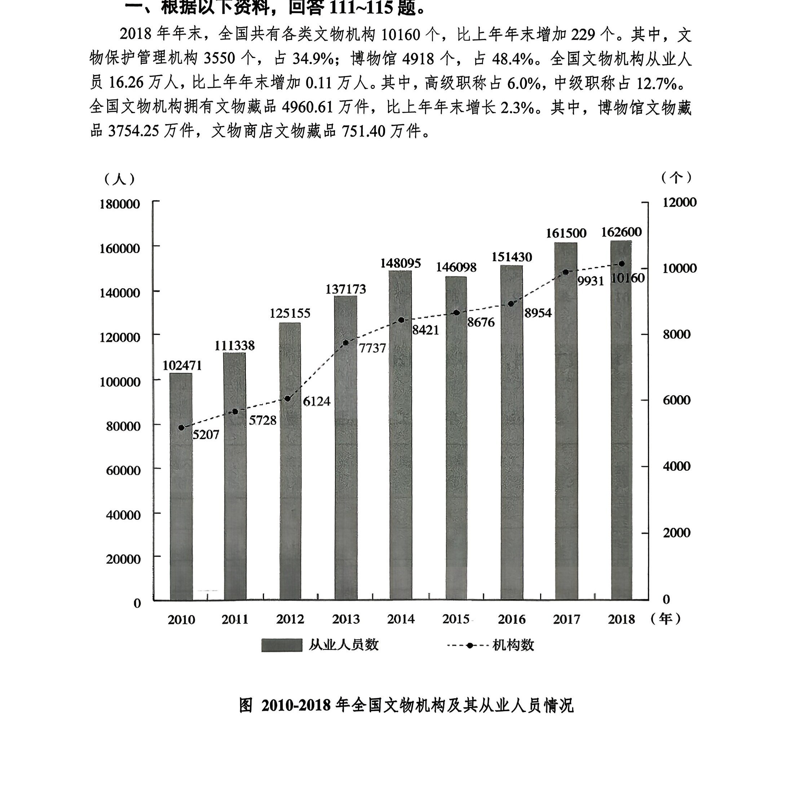
2018年年末全国文物机构从业人员中，不具备中高级职称的有：
A.12.46万人 B.13.22万人
C.14.89万人 D.15.28万人
答案点击查看答案与解析
16.26万人，其中，高级职称占比6.0%，中级职称占比12.7%，则不具备中高级职称的
占比为1-6.0%-12.7%=81.3%，所求为16.26×81.3%≈
16×0.82=13.12万人，选择最接近的B项。
2018年年末全国博物馆文物藏品、文物商店文物藏品占全国文物机构文物藏品的比重之差为：
A.53.6个百分点 B.55.2个百分点
C.60.5个百分点 D.66.3个百分点
答案点击查看答案与解析
4960.61万件，其中博物馆文物藏品3754.25万件，文物商店文物藏品751.40万件，所求
为
3754
4
.2
9
5
6
-
0
7
.6
5
1
1.40
≈
30
4
0
9
2
6
.8
0
5
=60.X%，即相差60.X个百分点，选择C项。
2011—2018年全国文物机构数增加最多的年份是：
A.2011年 B.2013年
C.2015年 D.2017年
答案点击查看答案与解析
5728-5207=5XX个、7737-6124=16XX个、8676-8421=2XX个、9931-8954
=9XX个，结合选项，2011-2018年全国文物机构数增加最多的年份是2013年，选择B
项。
2010—2018年全国文物机构从业人员年均增加：
A.7516人 B.7821人
C.8106人 D.8738人
答案点击查看答案与解析
年为102471人，则所求为
162
2
6
0
0
1
0
8
-
-
1
2
0
0
2
1
4
0
7160129
==75XX人，选择A项。
8
从上述材料不能推出的是：
A.2011—2018年全国文物机构数呈逐年增加的态势
B.2018年年末全国博物馆数量比文物保护管理机构数量多
C.2017年年末全国文物机构从业人员比上年年末增加1100人
D.2018年年末全国文物机构拥有文物藏品比上年年末增加100多万件
答案点击查看答案与解析
正确。
B项，由文字材料可知，2018年末年末全国博物馆数为4918个，文物保护管理机
构数为3550个，前者大于后者，正确。
C项，由图可知，2017年年末全国文物机构从业人员为161500人，2016年年末为
151430人，所求为161500-151430=1XXXX人>1100人，错误。直接选择C项。
验证D项，由文字材料可知，2018年年末，全国文物机构拥有文物藏品4960.61万
4960.61
件，比上年年末增长2.3%，则所求为2.3%=1XX万件，正确。
1+2.3%
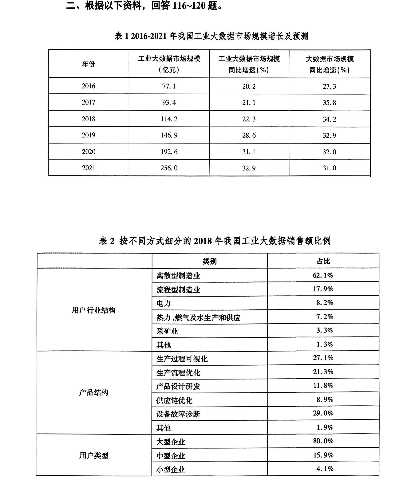
2016—2019年，我国工业大数据市场规模同比增速最快的为（ ）年。
A.2016 B.2017 C.2018 D.2019
答案点击查看答案与解析
速分别为20.2%、21.1%、22.3%、28.6%，观察可知，2019年我国工业大数据市场规模
同比增速最快。故本题选D。
如保持2021年同比增量不变，则在（ ）年我国工业大数据市场规模将比2021年翻一番。
A.2025 B.2026 C.2027 D.2028
答案点击查看答案与解析
256.0
256.0-192.6=63.4亿元，结合题目，比2021年翻一番即需增长256.0亿元，故所求为
63.4
=4.X年，则至少需要5年，即2021+5=2026年可达到要求。故本题选B。
另解：由材料可知，2021年我国工业大数据市场规模同比增长
1+
25
3
6
2
.0
.9%
32.9%
256.0
亿元，结合题目，比2021年翻一番即需增长256.0亿元，故所求为256.0
32.9%
1+32.9%
1+32.9%
==
32.9%
1
0
.3
.3
2
2
9
9
=4.X年，则至少需要5年，即2021+5=2026年可达到要求。故本
题选B。
2018年，我国离散型制造业大数据市场规模约比流程型制造业大数据市场规模高（ ）亿元。
A.44 B.50 C.98 D.113
答案点击查看答案与解析
其中，离散型制造业占62.1%，流程型制造业占17.9%，所求为114.2×（62.1%-17.9%）
=114.2×44.2%≈110×45%=49.5亿元。选最接近的B项。
另解：114.2×（62.1%-17.9%）=114.2×44.2%≈114.2×
4
9
=
456
9
.8
=50.X亿元，选最接
近的B项。
2018年我国工业大数据销售额最高的5种产品结构中，销售额最高的类别销售额约是销售额最低类别的（ ）倍。
A.1.5 B.2.5 C.3.3 D.4.6
答案点击查看答案与解析
品结构中，销售额最高的是设备故障诊断（占29.0%），最低的是供应链优化（占8.9%）。
所求为
2
8
9
.
.
9
0
%
%
=3.X倍。故本题选C。
关于我国工业大数据市场，能够从上述资料中推出的是：
A.2018年我国工业大数据市场中，大型企业的销售额超过80亿元
B.2018年我国工业大数据市场中，电力行业销售额是采矿业的三倍多
C.2017年，我国工业大数据占大数据总体规模的比重高于上年水平
D.2019—2021年，我国工业大数据市场规模将达到2016—2018年的2.5倍
答案点击查看答案与解析
亿元，其中大型企业的销售额占80.0%。所求为114.2×80.0%>100×80%=80亿元，正确。
故本题选A。
验证B项，由材料可知，2018年我国工业大数据市场中，电力行业销售额占8.2%，
采矿业销售额占3.3%，所求为
8
3
.2
.3
%
%
=2.X<3倍，错误。
C项，由材料可知，2017年我国工业大数据市场规模同比增长21.1%，大数据市场
规模同比增长35.8%。由于21.1%<35.8%，则2017年，我国工业大数据占大数据总体市
场规模的比重低于上年水平，错误。
D项，由材料可知，2019-2021年，我国工业大数据市场规模是2016-2018年的
14
7
6
7
.9
.1
+
+
1
9
9
3
2.6
.4+
+
1
2
1
5
4
6
.2
.0
<
15
7
0
0
+
+
2
9
0
0
0
+
+
1
2
1
6
0
0
=
6
2
1
7
0
0
=2.2X<2.5倍，错误。
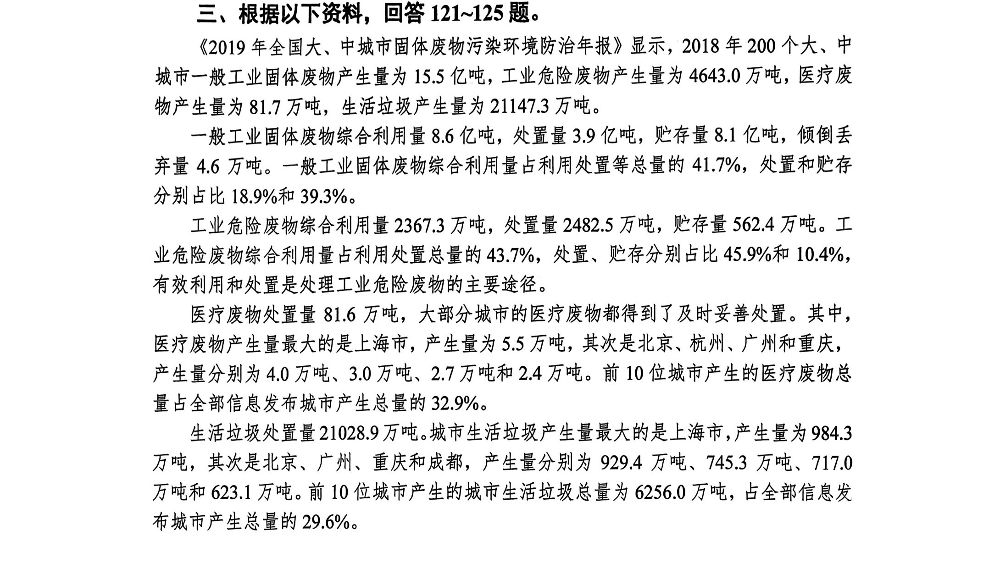
2018年200个大、中城市固体废物处置率（处置量÷产生量）最高的是：
A.一般工业固体废物 B.工业危险废物
C.医疗废物 D.生活垃圾
答案点击查看答案与解析
3.92482.581.621028.9
工业危险废物、医疗废物、生活垃圾处置率依次为、、、，
15.54643.081.721147.3
3.92482.581.621028.9
观察可知，<50%，<60%，>90%、>90%，排除A、B项；
15.54643.081.721147.3
只需比较
8
8
1
1
.6
.7
、
2
2
1
1
0
1
2
4
8
7
.9
.3
的大小，81.6→81.7增长不足0.5%，21028.9→21147.3增长
超过0.5%，所以
8
8
1
1
.6
.7
>
2
2
1
1
0
1
2
4
8
7
.9
.3
，综上，2018年200个大、中城市固体废物处置率最
高的是医疗废物，选择C项。
2018年上海市医疗废物产生量占200个大、中城市医疗废物产生量前10位城市的：
A.20.5% B.18.2% C.14.8% D.11.4%
答案点击查看答案与解析
为81.7万吨，前10位城市产生的医疗废物总量占全部信息发布城市产生总量的32.9%，
上海市的医疗废物产生量为5.5万吨。所求为
81.7
5
.5
32.9%
81
5
.5
33%
2
5.
6
5
.7
=20.X%，
选择A项。
假设2018年200个大、中城市工业危险废物产生量的同比增速为15.8%，则其同比增长量为：
A.681.7万吨 B.657.1万吨
C.633.5万吨 D.607.5万吨
答案点击查看答案与解析
量为4643.0万吨，结合题目假设条件，所求为
1
4
+
6
1
4
5
3
.
.
8
0
%
15.8%≈
1
4
.
6
16
16=63X万吨，
C项最接近，选择C项。
2018年200个大、中城市中生活垃圾产生量排前5位的城市的产生量占前10位城市的比重为：
A.60% B.64% C.68% D.72%
答案点击查看答案与解析
名前5位的城市是上海、北京、广州、重庆和成都，其垃圾产生量依次为984.3万吨、
929.4万吨、745.3万吨、717.0万吨、623.1万吨。前10位城市产生的城市生活垃圾总量
为6256.0万吨，所求为
984.3+929.4+
6
7
2
4
5
5.3
6.0
+717.0+623.1
≈
39
6
9
2
9
6
.
0
1
=63.X%，选择
B项。
根据资料，下列可以推出的是：
A.2018年全国一般工业固体废物、工业危险废物、医疗废物和生活垃圾产生量合计约为18亿吨
B.2018年200个大、中城市中医疗废物产生量排名第一城市的产生量是排名第五城市的1.7倍
C.2018年200个大、中城市中生活垃圾和医疗废物产生量排名第三的城市是同一城市
D.2018年200个大、中城市中，除了生活垃圾总量排名前10位城市外，平均每个城市产生的生活垃圾量约为78万吨
答案点击查看答案与解析
非全国数据，无法计算，错误；
B项，由材料可知，2018年200个大、中城市中医疗废物产生量最大的是上海市，
产生量为5.5万吨，排名第五的是重庆，产生量为2.4万吨。所求为5.5÷2.4=2.X倍，错
误；
C项，由材料可知，2018年200个大、中城市中医疗废物产生量第三的城市是杭州，
而生活垃圾产生量第三的城市是广州，错误；直接选择D项。
验证D项，由材料可知，2018年200个大、中城市生活垃圾产生量为21147.3万吨，
其中前10位城市产生的城市生活垃圾总量为6256.0万吨，所求为（21147.3-6256.0）÷
（200-10）=14891.3÷190≈78万吨，正确。
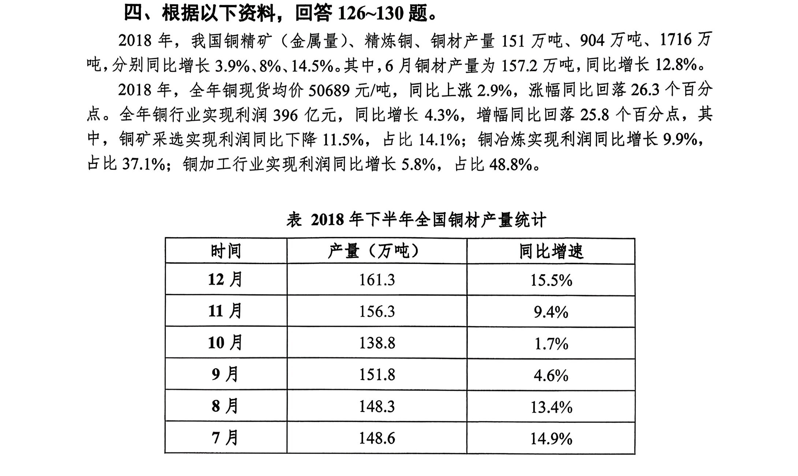
2018年，我国铜精矿（金属量）产量占铜精矿（金属量）、精炼铜、铜材产量的比重约为：
A.5.4% B.6.2% C.7.5% D.8%
答案点击查看答案与解析
151
铜材产量151万吨、904万吨、1716万吨。所求为×100%≈
151+904+1716
1
2
5
7
1
70
≈5.5%，
选择最接近的A项。
2018年我国铜行业实现利润占比最少的行业其2017年实现利润约多少亿元？
A.50.1 B.55.3 C.63.1 D.68.3
答案点击查看答案与解析
中，铜矿采选实现利润同比下降11.5%，占比14.1%；铜冶炼实现利润同比增长9.9%，
占比37.1%；铜加工行业实现利润同比增长5.8%，占比48.8%。则占比最少的行业是铜
矿采选，所求为
39
1
6
-
1
1
1
4
.5
.1
%
%401.4
≈=63.X亿元，选择C项。
0.885
与2017年6月相比，同年8月我国铜材产量约：
A.增长了6.2% B.降低了6.2%
C.增长了27.9% D.降低了27.9%
答案点击查看答案与解析
12.8%。8月产量为148.3万吨，同比增长13.4%。观察可知，2018年6月产量大于8月，
148.3
增速小于8月，所以2017年8月铜材产量小于6月，排除A、C项。所求为
1+13.4%
÷
1
1
+
5
1
7
2
.2
.8%
-1≈
1
1
5
.1
1
1
.1
6
-1=-
1
1
6
=-6.X%，选择B项。
关于我国铜材产量，2018年下列月份的环比增速排序正确的是：
A.11月＞9月＞12月 B.11月＞12月＞9月
C.12月＞11月＞9月 D.12月＞9月＞11月
答案点击查看答案与解析
环比增速依次为
161.3
15
−
6
1
.3
56.3
=
15
5
6.3
、
156.3
13
−
8
1
.8
38.8
=
17.5
138.8
151.8−148.3
、=
148.31
3
4
.5
8.3
，
17.553.5
比较可知，最大，排除C、D选项；比较和的大小，3.5→5增长超过
138.8156.3148.3
10%，148.3→156.3增长不足10%，所以
15
5
6.3
>
1
3
4
.5
8.3
；综上
17.5
138.8
>
15
5
6.3
>
1
3
4
.5
8.3
，即
11月的环比增速最大，9月的环比增速最小，选择B项。
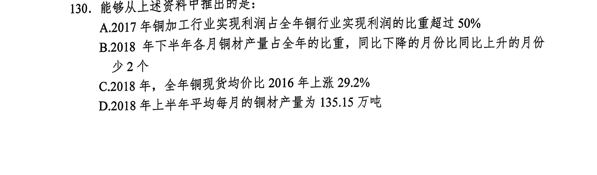
答案点击查看答案与解析
率（5.8%）大于全年铜行业实现利润同比增长率（4.3%），则2018年所占比重大于2017
年，2018年铜加工行业实现利润占比为48.8%，则2017年所占比重小于48.8%，错误；
B项，由材料可知，2018年下半年某月铜材产量占全年的比重同比下降，则其当月
产量的同比增速需小于全年铜材产量的同比增速（14.5%），由表格可知，比重同比下
降的有8、9、10、11月共4个月份，而比重同比上升的有7月、12月共2个月份，则
同比下降的月份比同比上升的月份多2个，错误；
C项，由材料可知，2018年，全年铜现货均价同比上涨2.9%，涨幅同比回落26.3
个百分点，所求为2.9%+（2.9%+26.3%）+2.9%×（2.9%+26.3%）
=2.9%+29.2%+2.9%×29.2%>29.2%，错误；直接选D项。
验证D项，由表格可知，2018年下半年我国铜材产量共161.3+156.3+138.8
+151.8+148.3+148.6=905.1万吨，所求为（1716-905.1）÷6=810.9÷6=135.15万吨，正确。